<!DOCTYPE html>
<html>
<head>
    
    <meta http-equiv="content-type" content="text/html; charset=UTF-8" />
    
        <script>
            L_NO_TOUCH = false;
            L_DISABLE_3D = false;
        </script>
    
    <style>html, body {width: 100%;height: 100%;margin: 0;padding: 0;}</style>
    <style>#map {position:absolute;top:0;bottom:0;right:0;left:0;}</style>
    <script src="https://cdn.jsdelivr.net/npm/leaflet@1.9.3/dist/leaflet.js"></script>
    <script src="https://code.jquery.com/jquery-1.12.4.min.js"></script>
    <script src="https://cdn.jsdelivr.net/npm/bootstrap@5.2.2/dist/js/bootstrap.bundle.min.js"></script>
    <script src="https://cdnjs.cloudflare.com/ajax/libs/Leaflet.awesome-markers/2.0.2/leaflet.awesome-markers.js"></script>
    <link rel="stylesheet" href="https://cdn.jsdelivr.net/npm/leaflet@1.9.3/dist/leaflet.css"/>
    <link rel="stylesheet" href="https://cdn.jsdelivr.net/npm/bootstrap@5.2.2/dist/css/bootstrap.min.css"/>
    <link rel="stylesheet" href="https://netdna.bootstrapcdn.com/bootstrap/3.0.0/css/bootstrap.min.css"/>
    <link rel="stylesheet" href="https://cdn.jsdelivr.net/npm/@fortawesome/fontawesome-free@6.2.0/css/all.min.css"/>
    <link rel="stylesheet" href="https://cdnjs.cloudflare.com/ajax/libs/Leaflet.awesome-markers/2.0.2/leaflet.awesome-markers.css"/>
    <link rel="stylesheet" href="https://cdn.jsdelivr.net/gh/python-visualization/folium/folium/templates/leaflet.awesome.rotate.min.css"/>
    
            <meta name="viewport" content="width=device-width,
                initial-scale=1.0, maximum-scale=1.0, user-scalable=no" />
            <style>
                #map_3b289bdffcc7b955702bcc4ab372c4aa {
                    position: relative;
                    width: 100.0%;
                    height: 100.0%;
                    left: 0.0%;
                    top: 0.0%;
                }
                .leaflet-container { font-size: 1rem; }
            </style>
        
</head>
<body>
    
    
            <div class="folium-map" id="map_3b289bdffcc7b955702bcc4ab372c4aa" ></div>
        
</body>
<script>
    
    
            var map_3b289bdffcc7b955702bcc4ab372c4aa = L.map(
                "map_3b289bdffcc7b955702bcc4ab372c4aa",
                {
                    center: [48.85763488191868, 2.34040396407194],
                    crs: L.CRS.EPSG3857,
                    zoom: 12,
                    zoomControl: true,
                    preferCanvas: false,
                }
            );

            

        
    
            var tile_layer_74bdc731c06430e42aabf16681aea238 = L.tileLayer(
                "https://cartodb-basemaps-{s}.global.ssl.fastly.net/light_all/{z}/{x}/{y}.png",
                {"attribution": "\u0026copy; \u003ca target=\"_blank\" href=\"http://www.openstreetmap.org/copyright\"\u003eOpenStreetMap\u003c/a\u003e contributors \u0026copy; \u003ca target=\"_blank\" href=\"http://cartodb.com/attributions\"\u003eCartoDB\u003c/a\u003e, CartoDB \u003ca target=\"_blank\" href =\"http://cartodb.com/attributions\"\u003eattributions\u003c/a\u003e", "detectRetina": false, "maxNativeZoom": 18, "maxZoom": 18, "minZoom": 0, "noWrap": false, "opacity": 1, "subdomains": "abc", "tms": false}
            ).addTo(map_3b289bdffcc7b955702bcc4ab372c4aa);
        
    
            var marker_ad3c3b1fd636dc564e2243dbb88ff1b7 = L.marker(
                [48.84298195771814, 2.3126034385725314],
                {}
            ).addTo(map_3b289bdffcc7b955702bcc4ab372c4aa);
        
    
            var icon_80b6bfdb1ca75df7a69323a8484e805d = L.AwesomeMarkers.icon(
                {"extraClasses": "fa-rotate-0", "icon": "info-sign", "iconColor": "white", "markerColor": "red", "prefix": "glyphicon"}
            );
            marker_ad3c3b1fd636dc564e2243dbb88ff1b7.setIcon(icon_80b6bfdb1ca75df7a69323a8484e805d);
        
    
        var popup_2d79851897fd023c284c31d4307f9683 = L.popup({"maxWidth": 500});

        
            
                var html_8720858bc3053188696d44488a544181 = $(`<div id="html_8720858bc3053188696d44488a544181" style="width: 100.0%; height: 100.0%;"> <br/> <a href='https://maps.app.goo.gl/R2eRBF3hF4UCzPap8' target='_blank' > See on GMAP</a></div>`)[0];
                popup_2d79851897fd023c284c31d4307f9683.setContent(html_8720858bc3053188696d44488a544181);
            
        

        marker_ad3c3b1fd636dc564e2243dbb88ff1b7.bindPopup(popup_2d79851897fd023c284c31d4307f9683)
        ;

        
    
    
            marker_ad3c3b1fd636dc564e2243dbb88ff1b7.bindTooltip(
                `<div>
                     Pasteur - Métro
                 </div>`,
                {"sticky": true}
            );
        
    
            var marker_90a2fe1214b6e1c10e7015d73da2373c = L.marker(
                [48.846912172275374, 2.3100541376823607],
                {}
            ).addTo(map_3b289bdffcc7b955702bcc4ab372c4aa);
        
    
            var icon_5a4d393ff85c7de4184009f959121a1b = L.AwesomeMarkers.icon(
                {"extraClasses": "fa-rotate-0", "icon": "info-sign", "iconColor": "white", "markerColor": "beige", "prefix": "glyphicon"}
            );
            marker_90a2fe1214b6e1c10e7015d73da2373c.setIcon(icon_5a4d393ff85c7de4184009f959121a1b);
        
    
        var popup_a5cd71a8585f36ea7b80296a7fc8a4e1 = L.popup({"maxWidth": 500});

        
            
                var html_bd53f8283533df8ab1ea396386ad5d46 = $(`<div id="html_bd53f8283533df8ab1ea396386ad5d46" style="width: 100.0%; height: 100.0%;">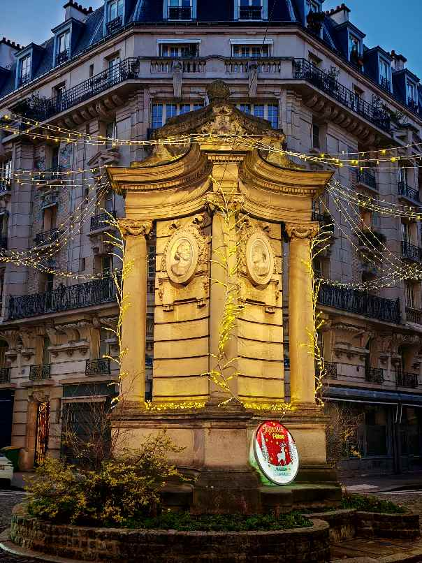 <br/> <a href='https://maps.app.goo.gl/Q9xHfytkLsMtygVbA' target='_blank' > See on GMAP</a></div>`)[0];
                popup_a5cd71a8585f36ea7b80296a7fc8a4e1.setContent(html_bd53f8283533df8ab1ea396386ad5d46);
            
        

        marker_90a2fe1214b6e1c10e7015d73da2373c.bindPopup(popup_a5cd71a8585f36ea7b80296a7fc8a4e1)
        ;

        
    
    
            marker_90a2fe1214b6e1c10e7015d73da2373c.bindTooltip(
                `<div>
                     Fontaine du puits de Grenelle
                 </div>`,
                {"sticky": true}
            );
        
    
            var marker_925993d01ce24ec50aa797ba84e22950 = L.marker(
                [48.83935605553204, 2.2683600466147382],
                {}
            ).addTo(map_3b289bdffcc7b955702bcc4ab372c4aa);
        
    
            var icon_806a60ee007ecea0c998a45746fd5409 = L.AwesomeMarkers.icon(
                {"extraClasses": "fa-rotate-0", "icon": "info-sign", "iconColor": "white", "markerColor": "beige", "prefix": "glyphicon"}
            );
            marker_925993d01ce24ec50aa797ba84e22950.setIcon(icon_806a60ee007ecea0c998a45746fd5409);
        
    
        var popup_d72d0038f197195e6babd8df36276e8d = L.popup({"maxWidth": 500});

        
            
                var html_4727792806c43bfa905e08d7a76a4f72 = $(`<div id="html_4727792806c43bfa905e08d7a76a4f72" style="width: 100.0%; height: 100.0%;">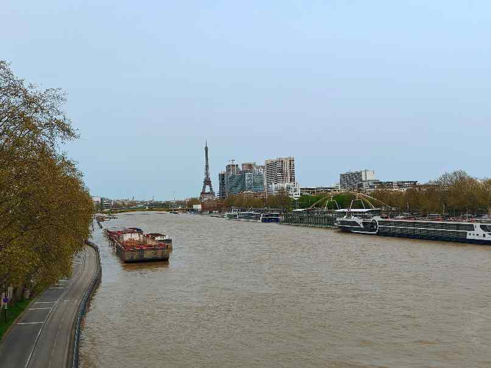 <br/> <a href='https://maps.app.goo.gl/iRQhu6bpihWmEfZc7' target='_blank' > See on GMAP</a></div>`)[0];
                popup_d72d0038f197195e6babd8df36276e8d.setContent(html_4727792806c43bfa905e08d7a76a4f72);
            
        

        marker_925993d01ce24ec50aa797ba84e22950.bindPopup(popup_d72d0038f197195e6babd8df36276e8d)
        ;

        
    
    
            marker_925993d01ce24ec50aa797ba84e22950.bindTooltip(
                `<div>
                     Pont du Garigliano
                 </div>`,
                {"sticky": true}
            );
        
    
            var marker_f984923b7fe5241b804baaefee553f65 = L.marker(
                [48.846644233718386, 2.275644262133231],
                {}
            ).addTo(map_3b289bdffcc7b955702bcc4ab372c4aa);
        
    
            var icon_320fca6bf1597b2bca91916cba57a74c = L.AwesomeMarkers.icon(
                {"extraClasses": "fa-rotate-0", "icon": "info-sign", "iconColor": "white", "markerColor": "beige", "prefix": "glyphicon"}
            );
            marker_f984923b7fe5241b804baaefee553f65.setIcon(icon_320fca6bf1597b2bca91916cba57a74c);
        
    
        var popup_8a1bb04b13b2195ae223be039ea6a3f3 = L.popup({"maxWidth": 500});

        
            
                var html_41759cf14c7d95f920046817ce933599 = $(`<div id="html_41759cf14c7d95f920046817ce933599" style="width: 100.0%; height: 100.0%;"> <br/> <a href='https://maps.app.goo.gl/KBEDKjouVjcyGx3S6' target='_blank' > See on GMAP</a></div>`)[0];
                popup_8a1bb04b13b2195ae223be039ea6a3f3.setContent(html_41759cf14c7d95f920046817ce933599);
            
        

        marker_f984923b7fe5241b804baaefee553f65.bindPopup(popup_8a1bb04b13b2195ae223be039ea6a3f3)
        ;

        
    
    
            marker_f984923b7fe5241b804baaefee553f65.bindTooltip(
                `<div>
                     Pont Mirabeau
                 </div>`,
                {"sticky": true}
            );
        
    
            var marker_76db7124e726746d5baa4d426732d12f = L.marker(
                [48.83672224114709, 2.2781670410770887],
                {}
            ).addTo(map_3b289bdffcc7b955702bcc4ab372c4aa);
        
    
            var icon_2051b34c298762a537f9cd3dfe55c079 = L.AwesomeMarkers.icon(
                {"extraClasses": "fa-rotate-0", "icon": "info-sign", "iconColor": "white", "markerColor": "red", "prefix": "glyphicon"}
            );
            marker_76db7124e726746d5baa4d426732d12f.setIcon(icon_2051b34c298762a537f9cd3dfe55c079);
        
    
        var popup_6e917bde9037f9934477eaa4ddd0010a = L.popup({"maxWidth": 500});

        
            
                var html_a4fe2ec6d9c7970be83823210d4a54d0 = $(`<div id="html_a4fe2ec6d9c7970be83823210d4a54d0" style="width: 100.0%; height: 100.0%;"> <br/> <a href='https://maps.app.goo.gl/mpBDKsLDChMj5Gih9' target='_blank' > See on GMAP</a></div>`)[0];
                popup_6e917bde9037f9934477eaa4ddd0010a.setContent(html_a4fe2ec6d9c7970be83823210d4a54d0);
            
        

        marker_76db7124e726746d5baa4d426732d12f.bindPopup(popup_6e917bde9037f9934477eaa4ddd0010a)
        ;

        
    
    
            marker_76db7124e726746d5baa4d426732d12f.bindTooltip(
                `<div>
                     Petite ceinture - Balard
                 </div>`,
                {"sticky": true}
            );
        
    
            var marker_2e1cbc0ba04c4c4bdbb94b092d3be5db = L.marker(
                [48.8335758773694, 2.2897214162022395],
                {}
            ).addTo(map_3b289bdffcc7b955702bcc4ab372c4aa);
        
    
            var icon_9fc31880109ed83d342820ad0430c02d = L.AwesomeMarkers.icon(
                {"extraClasses": "fa-rotate-0", "icon": "info-sign", "iconColor": "white", "markerColor": "red", "prefix": "glyphicon"}
            );
            marker_2e1cbc0ba04c4c4bdbb94b092d3be5db.setIcon(icon_9fc31880109ed83d342820ad0430c02d);
        
    
        var popup_917af883e9d9f736fb8f0622f0d613ff = L.popup({"maxWidth": 500});

        
            
                var html_92f8382fbe52cc764d704ad951b7aea2 = $(`<div id="html_92f8382fbe52cc764d704ad951b7aea2" style="width: 100.0%; height: 100.0%;">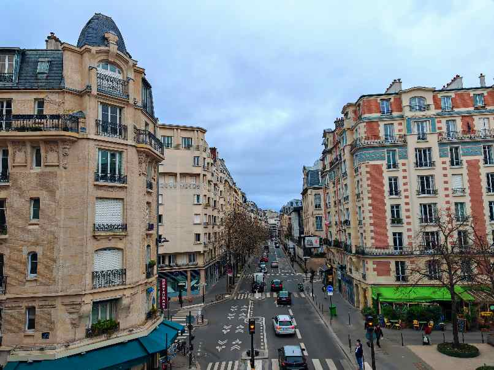</div>`)[0];
                popup_917af883e9d9f736fb8f0622f0d613ff.setContent(html_92f8382fbe52cc764d704ad951b7aea2);
            
        

        marker_2e1cbc0ba04c4c4bdbb94b092d3be5db.bindPopup(popup_917af883e9d9f736fb8f0622f0d613ff)
        ;

        
    
    
            marker_2e1cbc0ba04c4c4bdbb94b092d3be5db.bindTooltip(
                `<div>
                     Petite ceinture - Vaugirard
                 </div>`,
                {"sticky": true}
            );
        
    
            var marker_b3a0cc79ee0877c4cd7bcb0bb1da4807 = L.marker(
                [48.8310784124595, 2.3020738022909137],
                {}
            ).addTo(map_3b289bdffcc7b955702bcc4ab372c4aa);
        
    
            var icon_bee4a020f2241b38276fc49d84a90438 = L.AwesomeMarkers.icon(
                {"extraClasses": "fa-rotate-0", "icon": "info-sign", "iconColor": "white", "markerColor": "beige", "prefix": "glyphicon"}
            );
            marker_b3a0cc79ee0877c4cd7bcb0bb1da4807.setIcon(icon_bee4a020f2241b38276fc49d84a90438);
        
    
        var popup_0852ff7d726e9655e26cd33d4cc029cd = L.popup({"maxWidth": 500});

        
            
                var html_9814445409ee7c1a0bb79985ed075e27 = $(`<div id="html_9814445409ee7c1a0bb79985ed075e27" style="width: 100.0%; height: 100.0%;">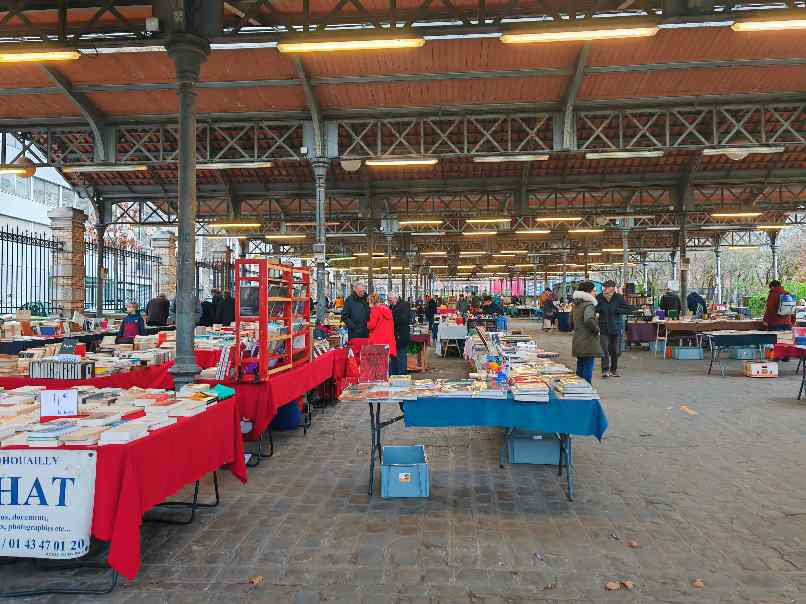 <br/> <a href='https://maps.app.goo.gl/pRtefWAQdN6XyGWU8' target='_blank' > See on GMAP</a></div>`)[0];
                popup_0852ff7d726e9655e26cd33d4cc029cd.setContent(html_9814445409ee7c1a0bb79985ed075e27);
            
        

        marker_b3a0cc79ee0877c4cd7bcb0bb1da4807.bindPopup(popup_0852ff7d726e9655e26cd33d4cc029cd)
        ;

        
    
    
            marker_b3a0cc79ee0877c4cd7bcb0bb1da4807.bindTooltip(
                `<div>
                     Marché du livre
                 </div>`,
                {"sticky": true}
            );
        
    
            var marker_098ff075b54a44930ceb13e6cb30bf3f = L.marker(
                [48.833417689832324, 2.3046978133631995],
                {}
            ).addTo(map_3b289bdffcc7b955702bcc4ab372c4aa);
        
    
            var icon_08a6098e22cc76714a9b5fb4b820eb76 = L.AwesomeMarkers.icon(
                {"extraClasses": "fa-rotate-0", "icon": "info-sign", "iconColor": "white", "markerColor": "beige", "prefix": "glyphicon"}
            );
            marker_098ff075b54a44930ceb13e6cb30bf3f.setIcon(icon_08a6098e22cc76714a9b5fb4b820eb76);
        
    
        var popup_68da3f64ef6de6e9d6e8794aafd950d3 = L.popup({"maxWidth": 500});

        
            
                var html_e72d1b6b1221355c3a57c78e7de862dc = $(`<div id="html_e72d1b6b1221355c3a57c78e7de862dc" style="width: 100.0%; height: 100.0%;">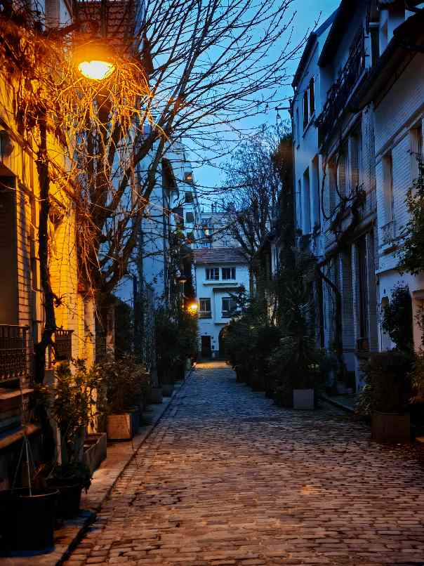</div>`)[0];
                popup_68da3f64ef6de6e9d6e8794aafd950d3.setContent(html_e72d1b6b1221355c3a57c78e7de862dc);
            
        

        marker_098ff075b54a44930ceb13e6cb30bf3f.bindPopup(popup_68da3f64ef6de6e9d6e8794aafd950d3)
        ;

        
    
    
            marker_098ff075b54a44930ceb13e6cb30bf3f.bindTooltip(
                `<div>
                     Villa Santos-Dumont
                 </div>`,
                {"sticky": true}
            );
        
    
            var marker_77805b866a3434e9c38ca1f81edc5591 = L.marker(
                [48.829807890141424, 2.2943428210166905],
                {}
            ).addTo(map_3b289bdffcc7b955702bcc4ab372c4aa);
        
    
            var icon_9e822fb056689d665a247eeafc81b044 = L.AwesomeMarkers.icon(
                {"extraClasses": "fa-rotate-0", "icon": "info-sign", "iconColor": "white", "markerColor": "red", "prefix": "glyphicon"}
            );
            marker_77805b866a3434e9c38ca1f81edc5591.setIcon(icon_9e822fb056689d665a247eeafc81b044);
        
    
        var popup_dede1ab2bc70c3ad85307e4e95882cfb = L.popup({"maxWidth": 500});

        
            
                var html_71fa539b2c32c3c49b22c07faf63aa63 = $(`<div id="html_71fa539b2c32c3c49b22c07faf63aa63" style="width: 100.0%; height: 100.0%;"> <br/> <a href='https://maps.app.goo.gl/1kiLYNXB5B48rnPb7' target='_blank' > See on GMAP</a></div>`)[0];
                popup_dede1ab2bc70c3ad85307e4e95882cfb.setContent(html_71fa539b2c32c3c49b22c07faf63aa63);
            
        

        marker_77805b866a3434e9c38ca1f81edc5591.bindPopup(popup_dede1ab2bc70c3ad85307e4e95882cfb)
        ;

        
    
    
            marker_77805b866a3434e9c38ca1f81edc5591.bindTooltip(
                `<div>
                     Saint-Antoine de Padoue
                 </div>`,
                {"sticky": true}
            );
        
    
            var marker_9606c54f52e75478b516e8e80a615e1d = L.marker(
                [48.839610417669554, 2.29831423360109],
                {}
            ).addTo(map_3b289bdffcc7b955702bcc4ab372c4aa);
        
    
            var icon_38bac5a6cf09b9da1570fa9d3fd75eb8 = L.AwesomeMarkers.icon(
                {"extraClasses": "fa-rotate-0", "icon": "info-sign", "iconColor": "white", "markerColor": "beige", "prefix": "glyphicon"}
            );
            marker_9606c54f52e75478b516e8e80a615e1d.setIcon(icon_38bac5a6cf09b9da1570fa9d3fd75eb8);
        
    
        var popup_3cc77713204e83a942eea5f8fa25e4f3 = L.popup({"maxWidth": 500});

        
            
                var html_ca3ed2dd9e3a8f077eaac5d55cf5e7c7 = $(`<div id="html_ca3ed2dd9e3a8f077eaac5d55cf5e7c7" style="width: 100.0%; height: 100.0%;"> <br/> <a href='https://maps.app.goo.gl/D6omsy3NNdzgozaR6' target='_blank' > See on GMAP</a></div>`)[0];
                popup_3cc77713204e83a942eea5f8fa25e4f3.setContent(html_ca3ed2dd9e3a8f077eaac5d55cf5e7c7);
            
        

        marker_9606c54f52e75478b516e8e80a615e1d.bindPopup(popup_3cc77713204e83a942eea5f8fa25e4f3)
        ;

        
    
    
            marker_9606c54f52e75478b516e8e80a615e1d.bindTooltip(
                `<div>
                     Saint-Lambert de Vaugirard
                 </div>`,
                {"sticky": true}
            );
        
    
            var marker_031b2818492a7b53491e6b94bcf856f0 = L.marker(
                [48.83166160554048, 2.299978891720356],
                {}
            ).addTo(map_3b289bdffcc7b955702bcc4ab372c4aa);
        
    
            var icon_8bfedcc30a7fb40f932cb42eb650092f = L.AwesomeMarkers.icon(
                {"extraClasses": "fa-rotate-0", "icon": "info-sign", "iconColor": "white", "markerColor": "beige", "prefix": "glyphicon"}
            );
            marker_031b2818492a7b53491e6b94bcf856f0.setIcon(icon_8bfedcc30a7fb40f932cb42eb650092f);
        
    
        var popup_a8171c3495da589049d4f6e634654e5e = L.popup({"maxWidth": 500});

        
            
                var html_146ce80dc259ac4ad0f1dd6b98bc37e0 = $(`<div id="html_146ce80dc259ac4ad0f1dd6b98bc37e0" style="width: 100.0%; height: 100.0%;"> <br/> <a href='https://maps.app.goo.gl/qGXv8BF85GQrYWwZA' target='_blank' > See on GMAP</a></div>`)[0];
                popup_a8171c3495da589049d4f6e634654e5e.setContent(html_146ce80dc259ac4ad0f1dd6b98bc37e0);
            
        

        marker_031b2818492a7b53491e6b94bcf856f0.bindPopup(popup_a8171c3495da589049d4f6e634654e5e)
        ;

        
    
    
            marker_031b2818492a7b53491e6b94bcf856f0.bindTooltip(
                `<div>
                     Beffroi de l'ancien marché
                 </div>`,
                {"sticky": true}
            );
        
    
            var marker_ee172b424d6d72288d16ac753bdb0f1f = L.marker(
                [48.83363054440208, 2.300960521499071],
                {}
            ).addTo(map_3b289bdffcc7b955702bcc4ab372c4aa);
        
    
            var icon_0986b706ffbc46b57e0932b574852d0e = L.AwesomeMarkers.icon(
                {"extraClasses": "fa-rotate-0", "icon": "info-sign", "iconColor": "white", "markerColor": "red", "prefix": "glyphicon"}
            );
            marker_ee172b424d6d72288d16ac753bdb0f1f.setIcon(icon_0986b706ffbc46b57e0932b574852d0e);
        
    
        var popup_7706eedecd471e8d3419ba1f91000056 = L.popup({"maxWidth": 500});

        
            
                var html_057aa634363d4a70b2c8f99583b393c9 = $(`<div id="html_057aa634363d4a70b2c8f99583b393c9" style="width: 100.0%; height: 100.0%;"> <br/> <a href='https://maps.app.goo.gl/BmTxpb2srsHFYhJG8' target='_blank' > See on GMAP</a></div>`)[0];
                popup_7706eedecd471e8d3419ba1f91000056.setContent(html_057aa634363d4a70b2c8f99583b393c9);
            
        

        marker_ee172b424d6d72288d16ac753bdb0f1f.bindPopup(popup_7706eedecd471e8d3419ba1f91000056)
        ;

        
    
    
            marker_ee172b424d6d72288d16ac753bdb0f1f.bindTooltip(
                `<div>
                     Notre-Dame de la Salette
                 </div>`,
                {"sticky": true}
            );
        
    
            var marker_192532a07c3df3c3939fa3a8ccb72233 = L.marker(
                [48.83258555348296, 2.2881001471037825],
                {}
            ).addTo(map_3b289bdffcc7b955702bcc4ab372c4aa);
        
    
            var icon_14168d0ce6dc0115550ff24f6b56084a = L.AwesomeMarkers.icon(
                {"extraClasses": "fa-rotate-0", "icon": "info-sign", "iconColor": "white", "markerColor": "beige", "prefix": "glyphicon"}
            );
            marker_192532a07c3df3c3939fa3a8ccb72233.setIcon(icon_14168d0ce6dc0115550ff24f6b56084a);
        
    
        var popup_c8771516189c934a88dfc5891bbc793f = L.popup({"maxWidth": 500});

        
            
                var html_4cfc40df828a6aa0a28d2a4c1cd92bad = $(`<div id="html_4cfc40df828a6aa0a28d2a4c1cd92bad" style="width: 100.0%; height: 100.0%;"> <br/> <a href='https://maps.app.goo.gl/itiXf5RVeAiGPuYKA' target='_blank' > See on GMAP</a></div>`)[0];
                popup_c8771516189c934a88dfc5891bbc793f.setContent(html_4cfc40df828a6aa0a28d2a4c1cd92bad);
            
        

        marker_192532a07c3df3c3939fa3a8ccb72233.bindPopup(popup_c8771516189c934a88dfc5891bbc793f)
        ;

        
    
    
            marker_192532a07c3df3c3939fa3a8ccb72233.bindTooltip(
                `<div>
                     Quartier Porte de Versailles
                 </div>`,
                {"sticky": true}
            );
        
    
            var marker_e91a065c9a3bc66fb772561d0cc485fe = L.marker(
                [48.832514390984294, 2.2876904797442204],
                {}
            ).addTo(map_3b289bdffcc7b955702bcc4ab372c4aa);
        
    
            var icon_5bf7c86eb7a3c670ff03129a9746a08a = L.AwesomeMarkers.icon(
                {"extraClasses": "fa-rotate-0", "icon": "info-sign", "iconColor": "white", "markerColor": "red", "prefix": "glyphicon"}
            );
            marker_e91a065c9a3bc66fb772561d0cc485fe.setIcon(icon_5bf7c86eb7a3c670ff03129a9746a08a);
        
    
        var popup_b9d549b38ccd5f187e85655fb0924ebe = L.popup({"maxWidth": 500});

        
            
                var html_c2d0b1ddebc99e9afb560ddc73bade77 = $(`<div id="html_c2d0b1ddebc99e9afb560ddc73bade77" style="width: 100.0%; height: 100.0%;"> <br/> <a href='https://maps.app.goo.gl/kqTMrnRgLg7X18Pq8' target='_blank' > See on GMAP</a></div>`)[0];
                popup_b9d549b38ccd5f187e85655fb0924ebe.setContent(html_c2d0b1ddebc99e9afb560ddc73bade77);
            
        

        marker_e91a065c9a3bc66fb772561d0cc485fe.bindPopup(popup_b9d549b38ccd5f187e85655fb0924ebe)
        ;

        
    
    
            marker_e91a065c9a3bc66fb772561d0cc485fe.bindTooltip(
                `<div>
                     Mur de Berlin
                 </div>`,
                {"sticky": true}
            );
        
    
            var marker_9adefb633b40e78918c66c408c3fe81b = L.marker(
                [48.831651192754975, 2.288351260361977],
                {}
            ).addTo(map_3b289bdffcc7b955702bcc4ab372c4aa);
        
    
            var icon_143c410a7229ea16ae4bc3f8714d0086 = L.AwesomeMarkers.icon(
                {"extraClasses": "fa-rotate-0", "icon": "info-sign", "iconColor": "white", "markerColor": "red", "prefix": "glyphicon"}
            );
            marker_9adefb633b40e78918c66c408c3fe81b.setIcon(icon_143c410a7229ea16ae4bc3f8714d0086);
        
    
        var popup_0e0b8bb3812780613d21fe7bf44ae8f1 = L.popup({"maxWidth": 500});

        
            
                var html_bd7a0033bf1b442844f7472e0a35f1b2 = $(`<div id="html_bd7a0033bf1b442844f7472e0a35f1b2" style="width: 100.0%; height: 100.0%;"> <br/> <a href='https://maps.app.goo.gl/tTh4sMG9VnwPZERP9' target='_blank' > See on GMAP</a></div>`)[0];
                popup_0e0b8bb3812780613d21fe7bf44ae8f1.setContent(html_bd7a0033bf1b442844f7472e0a35f1b2);
            
        

        marker_9adefb633b40e78918c66c408c3fe81b.bindPopup(popup_0e0b8bb3812780613d21fe7bf44ae8f1)
        ;

        
    
    
            marker_9adefb633b40e78918c66c408c3fe81b.bindTooltip(
                `<div>
                     Parc des expositions - Porte de Versailles
                 </div>`,
                {"sticky": true}
            );
        
    
            var marker_553e3b7d816c33f1a8f1b26f7900c1b3 = L.marker(
                [48.83149490876047, 2.2859340135596367],
                {}
            ).addTo(map_3b289bdffcc7b955702bcc4ab372c4aa);
        
    
            var icon_300d6864a47660ede28e79f18ff01094 = L.AwesomeMarkers.icon(
                {"extraClasses": "fa-rotate-0", "icon": "info-sign", "iconColor": "white", "markerColor": "red", "prefix": "glyphicon"}
            );
            marker_553e3b7d816c33f1a8f1b26f7900c1b3.setIcon(icon_300d6864a47660ede28e79f18ff01094);
        
    
        var popup_a18be82cbd01264f451dc9e91b61e10d = L.popup({"maxWidth": 500});

        
            
                var html_d373524967adbfb961b49f0ae7ad42e0 = $(`<div id="html_d373524967adbfb961b49f0ae7ad42e0" style="width: 100.0%; height: 100.0%;"> <br/> <a href='https://maps.app.goo.gl/zMkyLgFJhzPLJANh8' target='_blank' > See on GMAP</a></div>`)[0];
                popup_a18be82cbd01264f451dc9e91b61e10d.setContent(html_d373524967adbfb961b49f0ae7ad42e0);
            
        

        marker_553e3b7d816c33f1a8f1b26f7900c1b3.bindPopup(popup_a18be82cbd01264f451dc9e91b61e10d)
        ;

        
    
    
            marker_553e3b7d816c33f1a8f1b26f7900c1b3.bindTooltip(
                `<div>
                     Tour Triangle
                 </div>`,
                {"sticky": true}
            );
        
    
            var marker_f914f48eec3ad7fd203b2ac96bf2bac5 = L.marker(
                [48.8306608560005, 2.298690859432485],
                {}
            ).addTo(map_3b289bdffcc7b955702bcc4ab372c4aa);
        
    
            var icon_25aceff6ec8bc2ab75d85558d8b15ac9 = L.AwesomeMarkers.icon(
                {"extraClasses": "fa-rotate-0", "icon": "info-sign", "iconColor": "white", "markerColor": "beige", "prefix": "glyphicon"}
            );
            marker_f914f48eec3ad7fd203b2ac96bf2bac5.setIcon(icon_25aceff6ec8bc2ab75d85558d8b15ac9);
        
    
        var popup_ffe78c198c423868cb265b62d232ba7d = L.popup({"maxWidth": 500});

        
            
                var html_ff6769029e92bb8230f8f39c50e07ea8 = $(`<div id="html_ff6769029e92bb8230f8f39c50e07ea8" style="width: 100.0%; height: 100.0%;">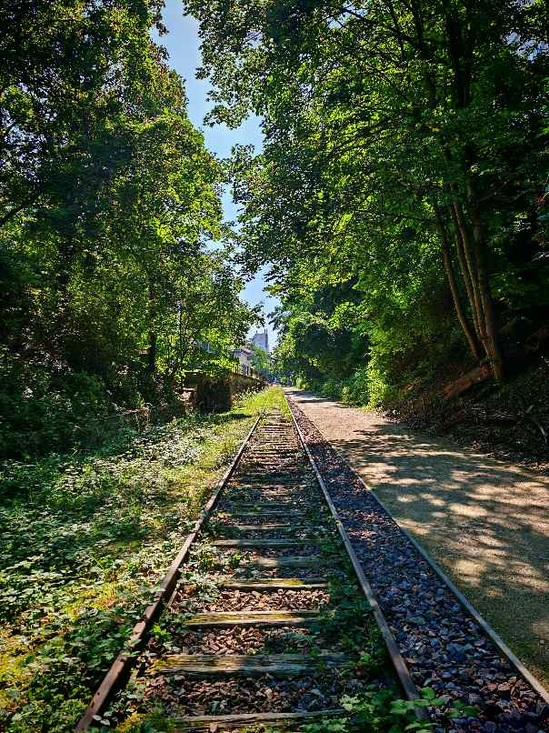 <br/> <a href='https://maps.app.goo.gl/6ziCNbwjb4PcEpF4A' target='_blank' > See on GMAP</a></div>`)[0];
                popup_ffe78c198c423868cb265b62d232ba7d.setContent(html_ff6769029e92bb8230f8f39c50e07ea8);
            
        

        marker_f914f48eec3ad7fd203b2ac96bf2bac5.bindPopup(popup_ffe78c198c423868cb265b62d232ba7d)
        ;

        
    
    
            marker_f914f48eec3ad7fd203b2ac96bf2bac5.bindTooltip(
                `<div>
                     Petite ceinture - Georges Brassens
                 </div>`,
                {"sticky": true}
            );
        
    
            var marker_66754c5a0a5f07feab7df0393f5ecefc = L.marker(
                [48.834993551865175, 2.2923505780358253],
                {}
            ).addTo(map_3b289bdffcc7b955702bcc4ab372c4aa);
        
    
            var icon_c20253c00a157faa6a774fc2a80d8c52 = L.AwesomeMarkers.icon(
                {"extraClasses": "fa-rotate-0", "icon": "info-sign", "iconColor": "white", "markerColor": "red", "prefix": "glyphicon"}
            );
            marker_66754c5a0a5f07feab7df0393f5ecefc.setIcon(icon_c20253c00a157faa6a774fc2a80d8c52);
        
    
        var popup_55d7d9ecbf091a4c9c27c92078e52a32 = L.popup({"maxWidth": 500});

        
            
                var html_a07c0f7b90935b590170d75bd786ae36 = $(`<div id="html_a07c0f7b90935b590170d75bd786ae36" style="width: 100.0%; height: 100.0%;"> <br/> <a href='https://maps.app.goo.gl/Dthkm5reXsNURwpS9' target='_blank' > See on GMAP</a></div>`)[0];
                popup_55d7d9ecbf091a4c9c27c92078e52a32.setContent(html_a07c0f7b90935b590170d75bd786ae36);
            
        

        marker_66754c5a0a5f07feab7df0393f5ecefc.bindPopup(popup_55d7d9ecbf091a4c9c27c92078e52a32)
        ;

        
    
    
            marker_66754c5a0a5f07feab7df0393f5ecefc.bindTooltip(
                `<div>
                     Université Panthéo-Assas
                 </div>`,
                {"sticky": true}
            );
        
    
            var marker_1e0a9465e0f694b885e6cab063001b33 = L.marker(
                [48.84159570130486, 2.2990881142278687],
                {}
            ).addTo(map_3b289bdffcc7b955702bcc4ab372c4aa);
        
    
            var icon_ae8392fc189c41e5c3db60891093b94a = L.AwesomeMarkers.icon(
                {"extraClasses": "fa-rotate-0", "icon": "info-sign", "iconColor": "white", "markerColor": "red", "prefix": "glyphicon"}
            );
            marker_1e0a9465e0f694b885e6cab063001b33.setIcon(icon_ae8392fc189c41e5c3db60891093b94a);
        
    
        var popup_bb61996c54a2d68643e6cd7137b2aae7 = L.popup({"maxWidth": 500});

        
            
                var html_6fa78f2f6541733f71fc6e23bd273592 = $(`<div id="html_6fa78f2f6541733f71fc6e23bd273592" style="width: 100.0%; height: 100.0%;"> <br/> <a href='https://maps.app.goo.gl/2ix9yFNKPutxe2t8A' target='_blank' > See on GMAP</a></div>`)[0];
                popup_bb61996c54a2d68643e6cd7137b2aae7.setContent(html_6fa78f2f6541733f71fc6e23bd273592);
            
        

        marker_1e0a9465e0f694b885e6cab063001b33.bindPopup(popup_bb61996c54a2d68643e6cd7137b2aae7)
        ;

        
    
    
            marker_1e0a9465e0f694b885e6cab063001b33.bindTooltip(
                `<div>
                     Point de vue Tour Eiffel, Mairie 15
                 </div>`,
                {"sticky": true}
            );
        
    
            var marker_16922b60820981db6c72b58e92bb8978 = L.marker(
                [48.84129359295487, 2.299960138647835],
                {}
            ).addTo(map_3b289bdffcc7b955702bcc4ab372c4aa);
        
    
            var icon_3c50a159f79d6d8825b8e376bf7e28c4 = L.AwesomeMarkers.icon(
                {"extraClasses": "fa-rotate-0", "icon": "info-sign", "iconColor": "white", "markerColor": "beige", "prefix": "glyphicon"}
            );
            marker_16922b60820981db6c72b58e92bb8978.setIcon(icon_3c50a159f79d6d8825b8e376bf7e28c4);
        
    
        var popup_62f9ea9e142e5e6790c85a09a4de8acb = L.popup({"maxWidth": 500});

        
            
                var html_b8c00e9113e4cd9eb1e412cf104cfbda = $(`<div id="html_b8c00e9113e4cd9eb1e412cf104cfbda" style="width: 100.0%; height: 100.0%;">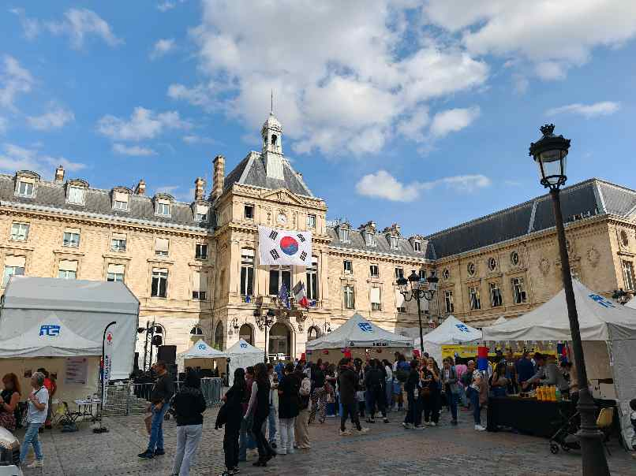 <br/> <a href='https://maps.app.goo.gl/ET3euKmWXBVowkMS8' target='_blank' > See on GMAP</a></div>`)[0];
                popup_62f9ea9e142e5e6790c85a09a4de8acb.setContent(html_b8c00e9113e4cd9eb1e412cf104cfbda);
            
        

        marker_16922b60820981db6c72b58e92bb8978.bindPopup(popup_62f9ea9e142e5e6790c85a09a4de8acb)
        ;

        
    
    
            marker_16922b60820981db6c72b58e92bb8978.bindTooltip(
                `<div>
                     Mairie du 15e
                 </div>`,
                {"sticky": true}
            );
        
    
            var marker_b9350964e97380be1f8c6cc6007737db = L.marker(
                [48.83188219590884, 2.292972020105652],
                {}
            ).addTo(map_3b289bdffcc7b955702bcc4ab372c4aa);
        
    
            var icon_30827e68ed4a77367344564abbdd6367 = L.AwesomeMarkers.icon(
                {"extraClasses": "fa-rotate-0", "icon": "info-sign", "iconColor": "white", "markerColor": "beige", "prefix": "glyphicon"}
            );
            marker_b9350964e97380be1f8c6cc6007737db.setIcon(icon_30827e68ed4a77367344564abbdd6367);
        
    
        var popup_858b50a7b3537ee68567ba7269593fcf = L.popup({"maxWidth": 500});

        
            
                var html_876de5d172c4fce979904b6388ba033f = $(`<div id="html_876de5d172c4fce979904b6388ba033f" style="width: 100.0%; height: 100.0%;">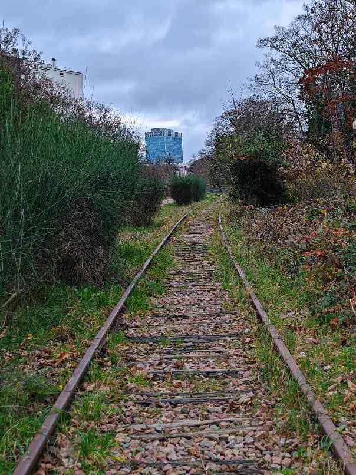 <br/> <a href='https://maps.app.goo.gl/WEZqzdCUGewrwQkz6' target='_blank' > See on GMAP</a></div>`)[0];
                popup_858b50a7b3537ee68567ba7269593fcf.setContent(html_876de5d172c4fce979904b6388ba033f);
            
        

        marker_b9350964e97380be1f8c6cc6007737db.bindPopup(popup_858b50a7b3537ee68567ba7269593fcf)
        ;

        
    
    
            marker_b9350964e97380be1f8c6cc6007737db.bindTooltip(
                `<div>
                     Petite ceinture - Accès rue Olivier de Serres
                 </div>`,
                {"sticky": true}
            );
        
    
            var marker_58bb67ff5884a8d9a5c7e63fc8b938a6 = L.marker(
                [48.841819679748404, 2.2742173644176367],
                {}
            ).addTo(map_3b289bdffcc7b955702bcc4ab372c4aa);
        
    
            var icon_ecbe3cc43f1198af60cb7971a1fce726 = L.AwesomeMarkers.icon(
                {"extraClasses": "fa-rotate-0", "icon": "info-sign", "iconColor": "white", "markerColor": "beige", "prefix": "glyphicon"}
            );
            marker_58bb67ff5884a8d9a5c7e63fc8b938a6.setIcon(icon_ecbe3cc43f1198af60cb7971a1fce726);
        
    
        var popup_0ded6e891e2feb351f8d8fb1e8783015 = L.popup({"maxWidth": 500});

        
            
                var html_b22a7c179236b1ee01a83cbbf4728e0c = $(`<div id="html_b22a7c179236b1ee01a83cbbf4728e0c" style="width: 100.0%; height: 100.0%;">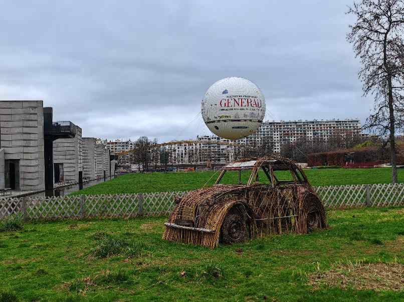 <br/> <a href='https://maps.app.goo.gl/4eqDYtT5AvbSfBm46' target='_blank' > See on GMAP</a></div>`)[0];
                popup_0ded6e891e2feb351f8d8fb1e8783015.setContent(html_b22a7c179236b1ee01a83cbbf4728e0c);
            
        

        marker_58bb67ff5884a8d9a5c7e63fc8b938a6.bindPopup(popup_0ded6e891e2feb351f8d8fb1e8783015)
        ;

        
    
    
            marker_58bb67ff5884a8d9a5c7e63fc8b938a6.bindTooltip(
                `<div>
                     Ballon de Paris
                 </div>`,
                {"sticky": true}
            );
        
    
            var marker_e8019695541ee82f0718da4dea60dc13 = L.marker(
                [48.83815699332318, 2.2770498272412536],
                {}
            ).addTo(map_3b289bdffcc7b955702bcc4ab372c4aa);
        
    
            var icon_a6b0c946bbb319d22bbfec5de3fc0e48 = L.AwesomeMarkers.icon(
                {"extraClasses": "fa-rotate-0", "icon": "info-sign", "iconColor": "white", "markerColor": "red", "prefix": "glyphicon"}
            );
            marker_e8019695541ee82f0718da4dea60dc13.setIcon(icon_a6b0c946bbb319d22bbfec5de3fc0e48);
        
    
        var popup_5ddb7df37743c3bd6e1e2539f59fa60c = L.popup({"maxWidth": 500});

        
            
                var html_e9ec1bd8fe05779f222ee78f75fd064f = $(`<div id="html_e9ec1bd8fe05779f222ee78f75fd064f" style="width: 100.0%; height: 100.0%;"> <br/> <a href='https://maps.app.goo.gl/ELVc17nSoaCAXtS57' target='_blank' > See on GMAP</a></div>`)[0];
                popup_5ddb7df37743c3bd6e1e2539f59fa60c.setContent(html_e9ec1bd8fe05779f222ee78f75fd064f);
            
        

        marker_e8019695541ee82f0718da4dea60dc13.bindPopup(popup_5ddb7df37743c3bd6e1e2539f59fa60c)
        ;

        
    
    
            marker_e8019695541ee82f0718da4dea60dc13.bindTooltip(
                `<div>
                     Monument aux morts - André-Citroën
                 </div>`,
                {"sticky": true}
            );
        
    
            var marker_5351dd935fdd6fd629415672b1ead841 = L.marker(
                [48.838364712421004, 2.2849047123686064],
                {}
            ).addTo(map_3b289bdffcc7b955702bcc4ab372c4aa);
        
    
            var icon_a6df992d575efa8afef8e7b6ef914bfc = L.AwesomeMarkers.icon(
                {"extraClasses": "fa-rotate-0", "icon": "info-sign", "iconColor": "white", "markerColor": "red", "prefix": "glyphicon"}
            );
            marker_5351dd935fdd6fd629415672b1ead841.setIcon(icon_a6df992d575efa8afef8e7b6ef914bfc);
        
    
        var popup_d3da1660e1a44bcb04bd53c82314050f = L.popup({"maxWidth": 500});

        
            
                var html_cfebb4397426b9669f2a1aa928cfaf9a = $(`<div id="html_cfebb4397426b9669f2a1aa928cfaf9a" style="width: 100.0%; height: 100.0%;"> <br/> <a href='https://maps.app.goo.gl/bWigySQLnJra9JQB8' target='_blank' > See on GMAP</a></div>`)[0];
                popup_d3da1660e1a44bcb04bd53c82314050f.setContent(html_cfebb4397426b9669f2a1aa928cfaf9a);
            
        

        marker_5351dd935fdd6fd629415672b1ead841.bindPopup(popup_d3da1660e1a44bcb04bd53c82314050f)
        ;

        
    
    
            marker_5351dd935fdd6fd629415672b1ead841.bindTooltip(
                `<div>
                     Cimetière de Vaugirard
                 </div>`,
                {"sticky": true}
            );
        
    
            var marker_bdf47195f949b9827d614752bd3ccc0e = L.marker(
                [48.837340369075996, 2.2962979583935117],
                {}
            ).addTo(map_3b289bdffcc7b955702bcc4ab372c4aa);
        
    
            var icon_aeb904acda75c1306d24b1737a0112e6 = L.AwesomeMarkers.icon(
                {"extraClasses": "fa-rotate-0", "icon": "info-sign", "iconColor": "white", "markerColor": "beige", "prefix": "glyphicon"}
            );
            marker_bdf47195f949b9827d614752bd3ccc0e.setIcon(icon_aeb904acda75c1306d24b1737a0112e6);
        
    
        var popup_7ed91f515ead408317b50097c1b2837c = L.popup({"maxWidth": 500});

        
            
                var html_8c7039608dccb49b49343c42f86bab2b = $(`<div id="html_8c7039608dccb49b49343c42f86bab2b" style="width: 100.0%; height: 100.0%;">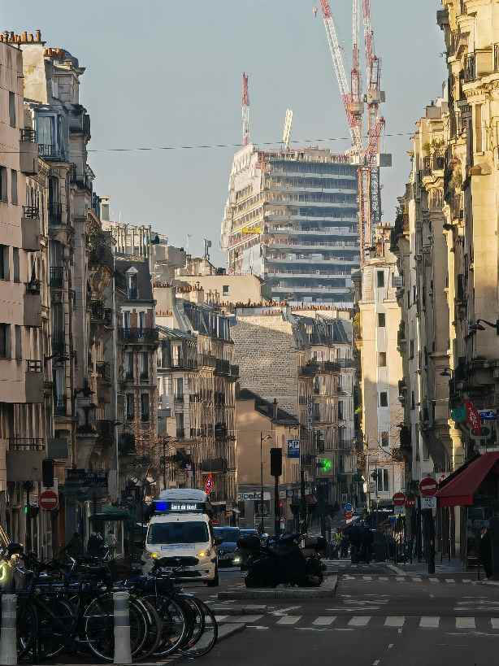 <br/> <a href='https://maps.app.goo.gl/4Rx312oMbuCU9Cxu8' target='_blank' > See on GMAP</a></div>`)[0];
                popup_7ed91f515ead408317b50097c1b2837c.setContent(html_8c7039608dccb49b49343c42f86bab2b);
            
        

        marker_bdf47195f949b9827d614752bd3ccc0e.bindPopup(popup_7ed91f515ead408317b50097c1b2837c)
        ;

        
    
    
            marker_bdf47195f949b9827d614752bd3ccc0e.bindTooltip(
                `<div>
                     Convention - Métro
                 </div>`,
                {"sticky": true}
            );
        
    
            var marker_9b732a2330d43aa97de445635e1fa560 = L.marker(
                [48.839525935841436, 2.3010532129873815],
                {}
            ).addTo(map_3b289bdffcc7b955702bcc4ab372c4aa);
        
    
            var icon_82e72c378a07e1aa00a7b78f3af6e435 = L.AwesomeMarkers.icon(
                {"extraClasses": "fa-rotate-0", "icon": "info-sign", "iconColor": "white", "markerColor": "beige", "prefix": "glyphicon"}
            );
            marker_9b732a2330d43aa97de445635e1fa560.setIcon(icon_82e72c378a07e1aa00a7b78f3af6e435);
        
    
        var popup_dd8d1a8beb683470625af24d7bff46a9 = L.popup({"maxWidth": 500});

        
            
                var html_6f6264dcad87eb907e0c848af0d2b99c = $(`<div id="html_6f6264dcad87eb907e0c848af0d2b99c" style="width: 100.0%; height: 100.0%;">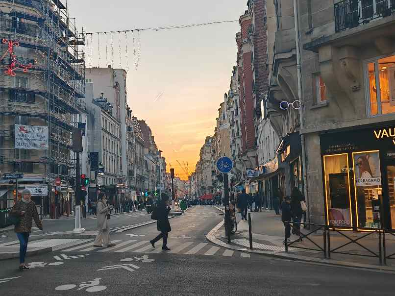 <br/> <a href='https://maps.app.goo.gl/VSBzdQGdDNy5eZjm8' target='_blank' > See on GMAP</a></div>`)[0];
                popup_dd8d1a8beb683470625af24d7bff46a9.setContent(html_6f6264dcad87eb907e0c848af0d2b99c);
            
        

        marker_9b732a2330d43aa97de445635e1fa560.bindPopup(popup_dd8d1a8beb683470625af24d7bff46a9)
        ;

        
    
    
            marker_9b732a2330d43aa97de445635e1fa560.bindTooltip(
                `<div>
                     Vaugirard - Métro
                 </div>`,
                {"sticky": true}
            );
        
    
            var marker_c0fb93b57b2d172da03c7caf5e430dfc = L.marker(
                [48.841510791054766, 2.307954544810969],
                {}
            ).addTo(map_3b289bdffcc7b955702bcc4ab372c4aa);
        
    
            var icon_d43e98e20b13ff9da5b265b05f7224f7 = L.AwesomeMarkers.icon(
                {"extraClasses": "fa-rotate-0", "icon": "info-sign", "iconColor": "white", "markerColor": "red", "prefix": "glyphicon"}
            );
            marker_c0fb93b57b2d172da03c7caf5e430dfc.setIcon(icon_d43e98e20b13ff9da5b265b05f7224f7);
        
    
        var popup_5be5d22a658648ecc77294f8feb7811b = L.popup({"maxWidth": 500});

        
            
                var html_cefa8175b92187749976b31d63eecd14 = $(`<div id="html_cefa8175b92187749976b31d63eecd14" style="width: 100.0%; height: 100.0%;"> <br/> <a href='https://maps.app.goo.gl/S13m16MDS9Rteboq9' target='_blank' > See on GMAP</a></div>`)[0];
                popup_5be5d22a658648ecc77294f8feb7811b.setContent(html_cefa8175b92187749976b31d63eecd14);
            
        

        marker_c0fb93b57b2d172da03c7caf5e430dfc.bindPopup(popup_5be5d22a658648ecc77294f8feb7811b)
        ;

        
    
    
            marker_c0fb93b57b2d172da03c7caf5e430dfc.bindTooltip(
                `<div>
                     Volontaires - Métro
                 </div>`,
                {"sticky": true}
            );
        
    
            var marker_c0b33ce2b1b85bcc5ba01ba20077a8c3 = L.marker(
                [48.83876180669688, 2.3168730856847546],
                {}
            ).addTo(map_3b289bdffcc7b955702bcc4ab372c4aa);
        
    
            var icon_efbdb7a1d077a7f6589eef5f904bc34b = L.AwesomeMarkers.icon(
                {"extraClasses": "fa-rotate-0", "icon": "info-sign", "iconColor": "white", "markerColor": "red", "prefix": "glyphicon"}
            );
            marker_c0b33ce2b1b85bcc5ba01ba20077a8c3.setIcon(icon_efbdb7a1d077a7f6589eef5f904bc34b);
        
    
        var popup_c8cb91a53d84505aa527e0d798af3c94 = L.popup({"maxWidth": 500});

        
            
                var html_1b654bb96fc5abeb0b6d9dc3ccb0aecb = $(`<div id="html_1b654bb96fc5abeb0b6d9dc3ccb0aecb" style="width: 100.0%; height: 100.0%;"> </div>`)[0];
                popup_c8cb91a53d84505aa527e0d798af3c94.setContent(html_1b654bb96fc5abeb0b6d9dc3ccb0aecb);
            
        

        marker_c0b33ce2b1b85bcc5ba01ba20077a8c3.bindPopup(popup_c8cb91a53d84505aa527e0d798af3c94)
        ;

        
    
    
            marker_c0b33ce2b1b85bcc5ba01ba20077a8c3.bindTooltip(
                `<div>
                     Point de vue Tour Eiffel - Montparnasse
                 </div>`,
                {"sticky": true}
            );
        
    
            var marker_f9f81530b0453a7f1a7380ae80c9d827 = L.marker(
                [48.84114338288352, 2.320483980658651],
                {}
            ).addTo(map_3b289bdffcc7b955702bcc4ab372c4aa);
        
    
            var icon_3394475f80770f2e6455d60bfe101637 = L.AwesomeMarkers.icon(
                {"extraClasses": "fa-rotate-0", "icon": "info-sign", "iconColor": "white", "markerColor": "beige", "prefix": "glyphicon"}
            );
            marker_f9f81530b0453a7f1a7380ae80c9d827.setIcon(icon_3394475f80770f2e6455d60bfe101637);
        
    
        var popup_18ffb7cb3cd0a14d6d8f103cc58fb01f = L.popup({"maxWidth": 500});

        
            
                var html_f7b8adb0a534a58329a0c527d9aa8269 = $(`<div id="html_f7b8adb0a534a58329a0c527d9aa8269" style="width: 100.0%; height: 100.0%;">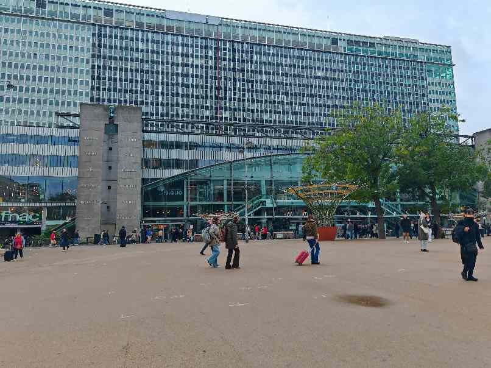 <br/> <a href='https://maps.app.goo.gl/R5ABX8dwooN7ZAQR6' target='_blank' > See on GMAP</a></div>`)[0];
                popup_18ffb7cb3cd0a14d6d8f103cc58fb01f.setContent(html_f7b8adb0a534a58329a0c527d9aa8269);
            
        

        marker_f9f81530b0453a7f1a7380ae80c9d827.bindPopup(popup_18ffb7cb3cd0a14d6d8f103cc58fb01f)
        ;

        
    
    
            marker_f9f81530b0453a7f1a7380ae80c9d827.bindTooltip(
                `<div>
                     Gare de Montparnasse
                 </div>`,
                {"sticky": true}
            );
        
    
            var marker_4d55255879285b9d2b96f3b9c83aa67c = L.marker(
                [48.84220561698416, 2.3219895199943563],
                {}
            ).addTo(map_3b289bdffcc7b955702bcc4ab372c4aa);
        
    
            var icon_05f923da0308e1149181e8a798a3b699 = L.AwesomeMarkers.icon(
                {"extraClasses": "fa-rotate-0", "icon": "info-sign", "iconColor": "white", "markerColor": "red", "prefix": "glyphicon"}
            );
            marker_4d55255879285b9d2b96f3b9c83aa67c.setIcon(icon_05f923da0308e1149181e8a798a3b699);
        
    
        var popup_8db2c0497839ccbaf9c92dbe8f596f8d = L.popup({"maxWidth": 500});

        
            
                var html_bbac35eef1ea6c1781e8dcf8d92ddd2f = $(`<div id="html_bbac35eef1ea6c1781e8dcf8d92ddd2f" style="width: 100.0%; height: 100.0%;"> <br/> <a href='https://maps.app.goo.gl/wTp8nvtNRFbrwWUm7' target='_blank' > See on GMAP</a></div>`)[0];
                popup_8db2c0497839ccbaf9c92dbe8f596f8d.setContent(html_bbac35eef1ea6c1781e8dcf8d92ddd2f);
            
        

        marker_4d55255879285b9d2b96f3b9c83aa67c.bindPopup(popup_8db2c0497839ccbaf9c92dbe8f596f8d)
        ;

        
    
    
            marker_4d55255879285b9d2b96f3b9c83aa67c.bindTooltip(
                `<div>
                     Tour Montparnasse
                 </div>`,
                {"sticky": true}
            );
        
    
            var marker_f076f70c33080a7717df514addd410f8 = L.marker(
                [48.843083682977344, 2.3186758883105067],
                {}
            ).addTo(map_3b289bdffcc7b955702bcc4ab372c4aa);
        
    
            var icon_3f9df3619e9803884e690c9a99430cc8 = L.AwesomeMarkers.icon(
                {"extraClasses": "fa-rotate-0", "icon": "info-sign", "iconColor": "white", "markerColor": "red", "prefix": "glyphicon"}
            );
            marker_f076f70c33080a7717df514addd410f8.setIcon(icon_3f9df3619e9803884e690c9a99430cc8);
        
    
        var popup_5a98988c4e702467612d75f9746eec41 = L.popup({"maxWidth": 500});

        
            
                var html_74f2662dc84aea3ebe18aa648e794bfa = $(`<div id="html_74f2662dc84aea3ebe18aa648e794bfa" style="width: 100.0%; height: 100.0%;"> <br/> <a href='https://maps.app.goo.gl/Lu1Uay5yswGexcuc7' target='_blank' > See on GMAP</a></div>`)[0];
                popup_5a98988c4e702467612d75f9746eec41.setContent(html_74f2662dc84aea3ebe18aa648e794bfa);
            
        

        marker_f076f70c33080a7717df514addd410f8.bindPopup(popup_5a98988c4e702467612d75f9746eec41)
        ;

        
    
    
            marker_f076f70c33080a7717df514addd410f8.bindTooltip(
                `<div>
                     Musée Bourdelle
                 </div>`,
                {"sticky": true}
            );
        
    
            var marker_f922163fe213adf402f65a837dda7af3 = L.marker(
                [48.844564412486946, 2.3175554900946245],
                {}
            ).addTo(map_3b289bdffcc7b955702bcc4ab372c4aa);
        
    
            var icon_5885dbe68838611b3caced860828e482 = L.AwesomeMarkers.icon(
                {"extraClasses": "fa-rotate-0", "icon": "info-sign", "iconColor": "white", "markerColor": "beige", "prefix": "glyphicon"}
            );
            marker_f922163fe213adf402f65a837dda7af3.setIcon(icon_5885dbe68838611b3caced860828e482);
        
    
        var popup_e197015da92d8a6e482efe155c70a5e2 = L.popup({"maxWidth": 500});

        
            
                var html_4157ebca56f2c277ede476bbdd875241 = $(`<div id="html_4157ebca56f2c277ede476bbdd875241" style="width: 100.0%; height: 100.0%;">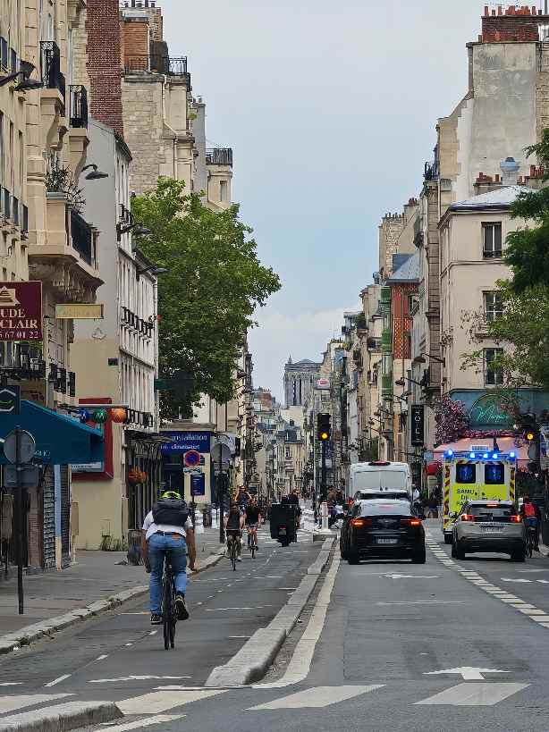 <br/> <a href='https://maps.app.goo.gl/RKS9U5kdgoFWB1J5A' target='_blank' > See on GMAP</a></div>`)[0];
                popup_e197015da92d8a6e482efe155c70a5e2.setContent(html_4157ebca56f2c277ede476bbdd875241);
            
        

        marker_f922163fe213adf402f65a837dda7af3.bindPopup(popup_e197015da92d8a6e482efe155c70a5e2)
        ;

        
    
    
            marker_f922163fe213adf402f65a837dda7af3.bindTooltip(
                `<div>
                     Falguière - Métro
                 </div>`,
                {"sticky": true}
            );
        
    
            var marker_7188cc1b9eb108d2f057ebec4c139c6c = L.marker(
                [48.8475042512676, 2.3112658768295717],
                {}
            ).addTo(map_3b289bdffcc7b955702bcc4ab372c4aa);
        
    
            var icon_8f3b8d0f7e0d1a7ffbe8abeaaec0bd02 = L.AwesomeMarkers.icon(
                {"extraClasses": "fa-rotate-0", "icon": "info-sign", "iconColor": "white", "markerColor": "red", "prefix": "glyphicon"}
            );
            marker_7188cc1b9eb108d2f057ebec4c139c6c.setIcon(icon_8f3b8d0f7e0d1a7ffbe8abeaaec0bd02);
        
    
        var popup_131c430da2ce3ef689228b04c120ce7f = L.popup({"maxWidth": 500});

        
            
                var html_69d03b20ec0a38ce69ae7e055c50c67a = $(`<div id="html_69d03b20ec0a38ce69ae7e055c50c67a" style="width: 100.0%; height: 100.0%;"> <br/> <a href='https://maps.app.goo.gl/4psU4cN1NuRLTgHJ7' target='_blank' > See on GMAP</a></div>`)[0];
                popup_131c430da2ce3ef689228b04c120ce7f.setContent(html_69d03b20ec0a38ce69ae7e055c50c67a);
            
        

        marker_7188cc1b9eb108d2f057ebec4c139c6c.bindPopup(popup_131c430da2ce3ef689228b04c120ce7f)
        ;

        
    
    
            marker_7188cc1b9eb108d2f057ebec4c139c6c.bindTooltip(
                `<div>
                     Point de vue Tour Eiffel - Breteuil
                 </div>`,
                {"sticky": true}
            );
        
    
            var marker_77ca8e215947a8901e726f34513f36a0 = L.marker(
                [48.845344875187735, 2.311393851998394],
                {}
            ).addTo(map_3b289bdffcc7b955702bcc4ab372c4aa);
        
    
            var icon_d9458d078d01f8281b320b7f1aaff9cc = L.AwesomeMarkers.icon(
                {"extraClasses": "fa-rotate-0", "icon": "info-sign", "iconColor": "white", "markerColor": "red", "prefix": "glyphicon"}
            );
            marker_77ca8e215947a8901e726f34513f36a0.setIcon(icon_d9458d078d01f8281b320b7f1aaff9cc);
        
    
        var popup_c9ce2545602b6238659f0ffb9aaa80ce = L.popup({"maxWidth": 500});

        
            
                var html_922eee453388228cf1140a51cdd08f95 = $(`<div id="html_922eee453388228cf1140a51cdd08f95" style="width: 100.0%; height: 100.0%;"> <br/> <a href='https://maps.app.goo.gl/uXBcXm9iMhzZV2a37' target='_blank' > See on GMAP</a></div>`)[0];
                popup_c9ce2545602b6238659f0ffb9aaa80ce.setContent(html_922eee453388228cf1140a51cdd08f95);
            
        

        marker_77ca8e215947a8901e726f34513f36a0.bindPopup(popup_c9ce2545602b6238659f0ffb9aaa80ce)
        ;

        
    
    
            marker_77ca8e215947a8901e726f34513f36a0.bindTooltip(
                `<div>
                     Point de vue Invalides - Breteuil
                 </div>`,
                {"sticky": true}
            );
        
    
            var marker_aff84b26b3cbe05ce7818a665a01549b = L.marker(
                [48.84115249456861, 2.287863062754178],
                {}
            ).addTo(map_3b289bdffcc7b955702bcc4ab372c4aa);
        
    
            var icon_e95b97173482d148f1a5bf3e6b6780e6 = L.AwesomeMarkers.icon(
                {"extraClasses": "fa-rotate-0", "icon": "info-sign", "iconColor": "white", "markerColor": "red", "prefix": "glyphicon"}
            );
            marker_aff84b26b3cbe05ce7818a665a01549b.setIcon(icon_e95b97173482d148f1a5bf3e6b6780e6);
        
    
        var popup_214812598d79af9013d0621b28718df1 = L.popup({"maxWidth": 500});

        
            
                var html_bb170a4be3bf01a0a77769661accfeff = $(`<div id="html_bb170a4be3bf01a0a77769661accfeff" style="width: 100.0%; height: 100.0%;"> <br/> <a href='https://maps.app.goo.gl/iqAivREwnefPPSsz7' target='_blank' > See on GMAP</a></div>`)[0];
                popup_214812598d79af9013d0621b28718df1.setContent(html_bb170a4be3bf01a0a77769661accfeff);
            
        

        marker_aff84b26b3cbe05ce7818a665a01549b.bindPopup(popup_214812598d79af9013d0621b28718df1)
        ;

        
    
    
            marker_aff84b26b3cbe05ce7818a665a01549b.bindTooltip(
                `<div>
                     Boucicaut - Métro
                 </div>`,
                {"sticky": true}
            );
        
    
            var marker_f804c2deef0c00cbc4f5f614439a7928 = L.marker(
                [48.84143607469091, 2.2809499717427144],
                {}
            ).addTo(map_3b289bdffcc7b955702bcc4ab372c4aa);
        
    
            var icon_733d30fb129736afdb30f5bd2bf2cc13 = L.AwesomeMarkers.icon(
                {"extraClasses": "fa-rotate-0", "icon": "info-sign", "iconColor": "white", "markerColor": "red", "prefix": "glyphicon"}
            );
            marker_f804c2deef0c00cbc4f5f614439a7928.setIcon(icon_733d30fb129736afdb30f5bd2bf2cc13);
        
    
        var popup_f5aa48196aee625e505c6762486b0bab = L.popup({"maxWidth": 500});

        
            
                var html_eebbb2d5e5f71400a7785bb89699e8e7 = $(`<div id="html_eebbb2d5e5f71400a7785bb89699e8e7" style="width: 100.0%; height: 100.0%;"></div>`)[0];
                popup_f5aa48196aee625e505c6762486b0bab.setContent(html_eebbb2d5e5f71400a7785bb89699e8e7);
            
        

        marker_f804c2deef0c00cbc4f5f614439a7928.bindPopup(popup_f5aa48196aee625e505c6762486b0bab)
        ;

        
    
    
            marker_f804c2deef0c00cbc4f5f614439a7928.bindTooltip(
                `<div>
                     Point de vue Tour eiffel - André Citroën
                 </div>`,
                {"sticky": true}
            );
        
    
            var marker_a18383449c57888ab3dcebdc6c7d8ad2 = L.marker(
                [48.844598137510495, 2.3061594150264213],
                {}
            ).addTo(map_3b289bdffcc7b955702bcc4ab372c4aa);
        
    
            var icon_5504b105c98c1ec98d86137e47515353 = L.AwesomeMarkers.icon(
                {"extraClasses": "fa-rotate-0", "icon": "info-sign", "iconColor": "white", "markerColor": "red", "prefix": "glyphicon"}
            );
            marker_a18383449c57888ab3dcebdc6c7d8ad2.setIcon(icon_5504b105c98c1ec98d86137e47515353);
        
    
        var popup_fec7ded7591b61ba6d683c90e2580778 = L.popup({"maxWidth": 500});

        
            
                var html_02300b6b9fcce1b57543f708059befd0 = $(`<div id="html_02300b6b9fcce1b57543f708059befd0" style="width: 100.0%; height: 100.0%;"> <br/> <a href='https://maps.app.goo.gl/pq17vC4xTPgG4hk88' target='_blank' > See on GMAP</a></div>`)[0];
                popup_fec7ded7591b61ba6d683c90e2580778.setContent(html_02300b6b9fcce1b57543f708059befd0);
            
        

        marker_a18383449c57888ab3dcebdc6c7d8ad2.bindPopup(popup_fec7ded7591b61ba6d683c90e2580778)
        ;

        
    
    
            marker_a18383449c57888ab3dcebdc6c7d8ad2.bindTooltip(
                `<div>
                     Salle d'escalade dans une église
                 </div>`,
                {"sticky": true}
            );
        
    
            var marker_a1e64235ea000b49d7297a2a0c5ce113 = L.marker(
                [48.84564888860396, 2.3095299699971257],
                {}
            ).addTo(map_3b289bdffcc7b955702bcc4ab372c4aa);
        
    
            var icon_42eb19d983c50d4d0749d1693e60c047 = L.AwesomeMarkers.icon(
                {"extraClasses": "fa-rotate-0", "icon": "info-sign", "iconColor": "white", "markerColor": "red", "prefix": "glyphicon"}
            );
            marker_a1e64235ea000b49d7297a2a0c5ce113.setIcon(icon_42eb19d983c50d4d0749d1693e60c047);
        
    
        var popup_7077b7fae5db1fe6bd0c6ebf812045b3 = L.popup({"maxWidth": 500});

        
            
                var html_01f0a01ecb8dad58dbcf22d9bfea931e = $(`<div id="html_01f0a01ecb8dad58dbcf22d9bfea931e" style="width: 100.0%; height: 100.0%;"> <br/> <a href='https://maps.app.goo.gl/jofLQEyHAQKxQynP8' target='_blank' > See on GMAP</a></div>`)[0];
                popup_7077b7fae5db1fe6bd0c6ebf812045b3.setContent(html_01f0a01ecb8dad58dbcf22d9bfea931e);
            
        

        marker_a1e64235ea000b49d7297a2a0c5ce113.bindPopup(popup_7077b7fae5db1fe6bd0c6ebf812045b3)
        ;

        
    
    
            marker_a1e64235ea000b49d7297a2a0c5ce113.bindTooltip(
                `<div>
                     Métro aérien - Sèvre-Lecourbe
                 </div>`,
                {"sticky": true}
            );
        
    
            var marker_09753c24aa708e9b9e75eeaf86705435 = L.marker(
                [48.84750919257415, 2.3029413847232036],
                {}
            ).addTo(map_3b289bdffcc7b955702bcc4ab372c4aa);
        
    
            var icon_eba8b1c524fca0726d9dce0ebd741ae0 = L.AwesomeMarkers.icon(
                {"extraClasses": "fa-rotate-0", "icon": "info-sign", "iconColor": "white", "markerColor": "red", "prefix": "glyphicon"}
            );
            marker_09753c24aa708e9b9e75eeaf86705435.setIcon(icon_eba8b1c524fca0726d9dce0ebd741ae0);
        
    
        var popup_20ce2126fe1ecc063439b466df58f3ee = L.popup({"maxWidth": 500});

        
            
                var html_531cf1268c20c97b7b1fc40ea67143cd = $(`<div id="html_531cf1268c20c97b7b1fc40ea67143cd" style="width: 100.0%; height: 100.0%;"> <br/> <a href='https://maps.app.goo.gl/av6w9vgZKEYkYW537' target='_blank' > See on GMAP</a></div>`)[0];
                popup_20ce2126fe1ecc063439b466df58f3ee.setContent(html_531cf1268c20c97b7b1fc40ea67143cd);
            
        

        marker_09753c24aa708e9b9e75eeaf86705435.bindPopup(popup_20ce2126fe1ecc063439b466df58f3ee)
        ;

        
    
    
            marker_09753c24aa708e9b9e75eeaf86705435.bindTooltip(
                `<div>
                     Métro aérien - Cambronne
                 </div>`,
                {"sticky": true}
            );
        
    
            var marker_8238f86922b450a0a2760831b457580a = L.marker(
                [48.84878553455467, 2.2988314851856373],
                {}
            ).addTo(map_3b289bdffcc7b955702bcc4ab372c4aa);
        
    
            var icon_c6df3d01ec97d9a6206a58f90edf212c = L.AwesomeMarkers.icon(
                {"extraClasses": "fa-rotate-0", "icon": "info-sign", "iconColor": "white", "markerColor": "red", "prefix": "glyphicon"}
            );
            marker_8238f86922b450a0a2760831b457580a.setIcon(icon_c6df3d01ec97d9a6206a58f90edf212c);
        
    
        var popup_289cb9bc17022771c1a7553ad7145ae6 = L.popup({"maxWidth": 500});

        
            
                var html_347694a5eb7c1bf7db2563b1b870df35 = $(`<div id="html_347694a5eb7c1bf7db2563b1b870df35" style="width: 100.0%; height: 100.0%;"> <br/> <a href='https://maps.app.goo.gl/9V83FRaoXeTya9rX8' target='_blank' > See on GMAP</a></div>`)[0];
                popup_289cb9bc17022771c1a7553ad7145ae6.setContent(html_347694a5eb7c1bf7db2563b1b870df35);
            
        

        marker_8238f86922b450a0a2760831b457580a.bindPopup(popup_289cb9bc17022771c1a7553ad7145ae6)
        ;

        
    
    
            marker_8238f86922b450a0a2760831b457580a.bindTooltip(
                `<div>
                     Métro aérien - La Motte-Picquet-Grenelle
                 </div>`,
                {"sticky": true}
            );
        
    
            var marker_eb2af134ac9b5960865ee7eff0e04cc4 = L.marker(
                [48.85044954620509, 2.2935861473309487],
                {}
            ).addTo(map_3b289bdffcc7b955702bcc4ab372c4aa);
        
    
            var icon_fac7254d03409305fb361b4db2dc9f29 = L.AwesomeMarkers.icon(
                {"extraClasses": "fa-rotate-0", "icon": "info-sign", "iconColor": "white", "markerColor": "red", "prefix": "glyphicon"}
            );
            marker_eb2af134ac9b5960865ee7eff0e04cc4.setIcon(icon_fac7254d03409305fb361b4db2dc9f29);
        
    
        var popup_955f8ad848c304be3c926b82f240b330 = L.popup({"maxWidth": 500});

        
            
                var html_77bacc96cd041f59380c7f8cbe8e68a4 = $(`<div id="html_77bacc96cd041f59380c7f8cbe8e68a4" style="width: 100.0%; height: 100.0%;"> <br/> <a href='https://maps.app.goo.gl/k3AHrTbU49fE7tv67' target='_blank' > See on GMAP</a></div>`)[0];
                popup_955f8ad848c304be3c926b82f240b330.setContent(html_77bacc96cd041f59380c7f8cbe8e68a4);
            
        

        marker_eb2af134ac9b5960865ee7eff0e04cc4.bindPopup(popup_955f8ad848c304be3c926b82f240b330)
        ;

        
    
    
            marker_eb2af134ac9b5960865ee7eff0e04cc4.bindTooltip(
                `<div>
                     Métro aérien - Dupleix
                 </div>`,
                {"sticky": true}
            );
        
    
            var marker_e1dd63312a9767bf154b6039b0444d04 = L.marker(
                [48.85388358949989, 2.2893534364034016],
                {}
            ).addTo(map_3b289bdffcc7b955702bcc4ab372c4aa);
        
    
            var icon_9a6d0c4dd0516f7b46f8410d274ec67d = L.AwesomeMarkers.icon(
                {"extraClasses": "fa-rotate-0", "icon": "info-sign", "iconColor": "white", "markerColor": "red", "prefix": "glyphicon"}
            );
            marker_e1dd63312a9767bf154b6039b0444d04.setIcon(icon_9a6d0c4dd0516f7b46f8410d274ec67d);
        
    
        var popup_2ecef4fccfff69021aa6a1fb8f7909ab = L.popup({"maxWidth": 500});

        
            
                var html_67d8404675b6196cc422d7bb31a00626 = $(`<div id="html_67d8404675b6196cc422d7bb31a00626" style="width: 100.0%; height: 100.0%;"> <br/> <a href='https://maps.app.goo.gl/G9iZmxZWv5z1A3GU7' target='_blank' > See on GMAP</a></div>`)[0];
                popup_2ecef4fccfff69021aa6a1fb8f7909ab.setContent(html_67d8404675b6196cc422d7bb31a00626);
            
        

        marker_e1dd63312a9767bf154b6039b0444d04.bindPopup(popup_2ecef4fccfff69021aa6a1fb8f7909ab)
        ;

        
    
    
            marker_e1dd63312a9767bf154b6039b0444d04.bindTooltip(
                `<div>
                     Métro aérien - Bir-Hakeim
                 </div>`,
                {"sticky": true}
            );
        
    
            var marker_7436b02af97352e360b35f905008992b = L.marker(
                [48.857517483834464, 2.285839881348283],
                {}
            ).addTo(map_3b289bdffcc7b955702bcc4ab372c4aa);
        
    
            var icon_b41f4a6205cc8c58a774532828db6ee3 = L.AwesomeMarkers.icon(
                {"extraClasses": "fa-rotate-0", "icon": "info-sign", "iconColor": "white", "markerColor": "red", "prefix": "glyphicon"}
            );
            marker_7436b02af97352e360b35f905008992b.setIcon(icon_b41f4a6205cc8c58a774532828db6ee3);
        
    
        var popup_48cab887455e5b8cd5081150434ed778 = L.popup({"maxWidth": 500});

        
            
                var html_9c0ef48e909904d8d1731c39825d4951 = $(`<div id="html_9c0ef48e909904d8d1731c39825d4951" style="width: 100.0%; height: 100.0%;"> <br/> <a href='https://maps.app.goo.gl/RKzgvpF3jZfWQGi97' target='_blank' > See on GMAP</a></div>`)[0];
                popup_48cab887455e5b8cd5081150434ed778.setContent(html_9c0ef48e909904d8d1731c39825d4951);
            
        

        marker_7436b02af97352e360b35f905008992b.bindPopup(popup_48cab887455e5b8cd5081150434ed778)
        ;

        
    
    
            marker_7436b02af97352e360b35f905008992b.bindTooltip(
                `<div>
                     Métro aérien - Passy
                 </div>`,
                {"sticky": true}
            );
        
    
            var marker_460addb256e8f1a9b98a1dd74a5a1941 = L.marker(
                [48.85093941616027, 2.2966374027386127],
                {}
            ).addTo(map_3b289bdffcc7b955702bcc4ab372c4aa);
        
    
            var icon_db37fd48cdbcfbea24cc38a8c36681be = L.AwesomeMarkers.icon(
                {"extraClasses": "fa-rotate-0", "icon": "info-sign", "iconColor": "white", "markerColor": "red", "prefix": "glyphicon"}
            );
            marker_460addb256e8f1a9b98a1dd74a5a1941.setIcon(icon_db37fd48cdbcfbea24cc38a8c36681be);
        
    
        var popup_a1cf1eaec37a4490f2ac64776795d45b = L.popup({"maxWidth": 500});

        
            
                var html_8655b8b7295be5557b95761cff0fd6d6 = $(`<div id="html_8655b8b7295be5557b95761cff0fd6d6" style="width: 100.0%; height: 100.0%;"> <br/> <a href='https://maps.app.goo.gl/S92kbamFeVL1nyqn7' target='_blank' > See on GMAP</a></div>`)[0];
                popup_a1cf1eaec37a4490f2ac64776795d45b.setContent(html_8655b8b7295be5557b95761cff0fd6d6);
            
        

        marker_460addb256e8f1a9b98a1dd74a5a1941.bindPopup(popup_a1cf1eaec37a4490f2ac64776795d45b)
        ;

        
    
    
            marker_460addb256e8f1a9b98a1dd74a5a1941.bindTooltip(
                `<div>
                     Saint-Léon
                 </div>`,
                {"sticky": true}
            );
        
    
            var marker_85bb65dc2e44f499b34011e18182724f = L.marker(
                [48.850040137890424, 2.2796961346418243],
                {}
            ).addTo(map_3b289bdffcc7b955702bcc4ab372c4aa);
        
    
            var icon_fcaf71379d4898fa84b9978765ceb4d9 = L.AwesomeMarkers.icon(
                {"extraClasses": "fa-rotate-0", "icon": "info-sign", "iconColor": "white", "markerColor": "beige", "prefix": "glyphicon"}
            );
            marker_85bb65dc2e44f499b34011e18182724f.setIcon(icon_fcaf71379d4898fa84b9978765ceb4d9);
        
    
        var popup_33d53da24dc0d6297a25293c0443b66b = L.popup({"maxWidth": 500});

        
            
                var html_c641d1423d9981f44267a2e26cabf467 = $(`<div id="html_c641d1423d9981f44267a2e26cabf467" style="width: 100.0%; height: 100.0%;"> <br/> <a href='https://maps.app.goo.gl/TMQuiug3HtV67z4A9' target='_blank' > See on GMAP</a></div>`)[0];
                popup_33d53da24dc0d6297a25293c0443b66b.setContent(html_c641d1423d9981f44267a2e26cabf467);
            
        

        marker_85bb65dc2e44f499b34011e18182724f.bindPopup(popup_33d53da24dc0d6297a25293c0443b66b)
        ;

        
    
    
            marker_85bb65dc2e44f499b34011e18182724f.bindTooltip(
                `<div>
                     Statue de la Liberté
                 </div>`,
                {"sticky": true}
            );
        
    
            var marker_4f5a66cb2c4d33a2ec055120ac66a781 = L.marker(
                [48.855776941745354, 2.2878604286384436],
                {}
            ).addTo(map_3b289bdffcc7b955702bcc4ab372c4aa);
        
    
            var icon_dd839a5a2c6e59dae76d2e8bba99c5ac = L.AwesomeMarkers.icon(
                {"extraClasses": "fa-rotate-0", "icon": "info-sign", "iconColor": "white", "markerColor": "red", "prefix": "glyphicon"}
            );
            marker_4f5a66cb2c4d33a2ec055120ac66a781.setIcon(icon_dd839a5a2c6e59dae76d2e8bba99c5ac);
        
    
        var popup_c6a3c11fd22474d2df3b22292cf87155 = L.popup({"maxWidth": 500});

        
            
                var html_fad16e89069b759ac14152e16468c32c = $(`<div id="html_fad16e89069b759ac14152e16468c32c" style="width: 100.0%; height: 100.0%;"> <br/> <a href='https://maps.app.goo.gl/RmGf8MuVYgtUf3dR9' target='_blank' > See on GMAP</a></div>`)[0];
                popup_c6a3c11fd22474d2df3b22292cf87155.setContent(html_fad16e89069b759ac14152e16468c32c);
            
        

        marker_4f5a66cb2c4d33a2ec055120ac66a781.bindPopup(popup_c6a3c11fd22474d2df3b22292cf87155)
        ;

        
    
    
            marker_4f5a66cb2c4d33a2ec055120ac66a781.bindTooltip(
                `<div>
                     Point de vue Tour Eiffel - Cygne
                 </div>`,
                {"sticky": true}
            );
        
    
            var marker_a1c5e4025dfdb254c4bb215a579c2b71 = L.marker(
                [48.850305139249215, 2.280055381567949],
                {}
            ).addTo(map_3b289bdffcc7b955702bcc4ab372c4aa);
        
    
            var icon_cf46197b72f134761474f398cdf41a29 = L.AwesomeMarkers.icon(
                {"extraClasses": "fa-rotate-0", "icon": "info-sign", "iconColor": "white", "markerColor": "red", "prefix": "glyphicon"}
            );
            marker_a1c5e4025dfdb254c4bb215a579c2b71.setIcon(icon_cf46197b72f134761474f398cdf41a29);
        
    
        var popup_61999202212a9e082893873214722c13 = L.popup({"maxWidth": 500});

        
            
                var html_0b3774745b9c869afd82693fa14e9695 = $(`<div id="html_0b3774745b9c869afd82693fa14e9695" style="width: 100.0%; height: 100.0%;"> <br/> <a href='https://maps.app.goo.gl/Wqc7uM9DEammX5gr6' target='_blank' > See on GMAP</a></div>`)[0];
                popup_61999202212a9e082893873214722c13.setContent(html_0b3774745b9c869afd82693fa14e9695);
            
        

        marker_a1c5e4025dfdb254c4bb215a579c2b71.bindPopup(popup_61999202212a9e082893873214722c13)
        ;

        
    
    
            marker_a1c5e4025dfdb254c4bb215a579c2b71.bindTooltip(
                `<div>
                     Pont de Grenelle
                 </div>`,
                {"sticky": true}
            );
        
    
            var marker_c0c31841f5c03cc8e1cc7545f3d9db48 = L.marker(
                [48.85562971463841, 2.2876340824256736],
                {}
            ).addTo(map_3b289bdffcc7b955702bcc4ab372c4aa);
        
    
            var icon_bcfb5df79be46379107ca27a3690d1a4 = L.AwesomeMarkers.icon(
                {"extraClasses": "fa-rotate-0", "icon": "info-sign", "iconColor": "white", "markerColor": "red", "prefix": "glyphicon"}
            );
            marker_c0c31841f5c03cc8e1cc7545f3d9db48.setIcon(icon_bcfb5df79be46379107ca27a3690d1a4);
        
    
        var popup_7744d4dfdf37c45cf49ae4d0e4f28612 = L.popup({"maxWidth": 500});

        
            
                var html_8f8f1f820599189f9c92fc3f3ca3eb24 = $(`<div id="html_8f8f1f820599189f9c92fc3f3ca3eb24" style="width: 100.0%; height: 100.0%;"> <br/> <a href='https://maps.app.goo.gl/DbgzGJygEyDix7x58' target='_blank' > See on GMAP</a></div>`)[0];
                popup_7744d4dfdf37c45cf49ae4d0e4f28612.setContent(html_8f8f1f820599189f9c92fc3f3ca3eb24);
            
        

        marker_c0c31841f5c03cc8e1cc7545f3d9db48.bindPopup(popup_7744d4dfdf37c45cf49ae4d0e4f28612)
        ;

        
    
    
            marker_c0c31841f5c03cc8e1cc7545f3d9db48.bindTooltip(
                `<div>
                     Pont de Bir-Hakeim
                 </div>`,
                {"sticky": true}
            );
        
    
            var marker_343e41f9d8e5079565aa298a233be8ad = L.marker(
                [48.84133813786884, 2.3122557851505543],
                {}
            ).addTo(map_3b289bdffcc7b955702bcc4ab372c4aa);
        
    
            var icon_a9e3111fd1aebd468828df0bb41a1f6b = L.AwesomeMarkers.icon(
                {"extraClasses": "fa-rotate-0", "icon": "info-sign", "iconColor": "white", "markerColor": "red", "prefix": "glyphicon"}
            );
            marker_343e41f9d8e5079565aa298a233be8ad.setIcon(icon_a9e3111fd1aebd468828df0bb41a1f6b);
        
    
        var popup_83a5fb0dedafc20dd17458bfd216d019 = L.popup({"maxWidth": 500});

        
            
                var html_a38dc46706c02709f08af06afd652844 = $(`<div id="html_a38dc46706c02709f08af06afd652844" style="width: 100.0%; height: 100.0%;"> <br/> <a href='https://maps.app.goo.gl/3FdVjRG17TYzXY8b9' target='_blank' > See on GMAP</a></div>`)[0];
                popup_83a5fb0dedafc20dd17458bfd216d019.setContent(html_a38dc46706c02709f08af06afd652844);
            
        

        marker_343e41f9d8e5079565aa298a233be8ad.bindPopup(popup_83a5fb0dedafc20dd17458bfd216d019)
        ;

        
    
    
            marker_343e41f9d8e5079565aa298a233be8ad.bindTooltip(
                `<div>
                     Saint-Jean Baptiste de la Salle
                 </div>`,
                {"sticky": true}
            );
        
    
            var marker_369829cdb3c9027725bca306b377bd37 = L.marker(
                [48.843166790259254, 2.292612108566544],
                {}
            ).addTo(map_3b289bdffcc7b955702bcc4ab372c4aa);
        
    
            var icon_62c47a05f6eee6efd838c67b0147c1d9 = L.AwesomeMarkers.icon(
                {"extraClasses": "fa-rotate-0", "icon": "info-sign", "iconColor": "white", "markerColor": "red", "prefix": "glyphicon"}
            );
            marker_369829cdb3c9027725bca306b377bd37.setIcon(icon_62c47a05f6eee6efd838c67b0147c1d9);
        
    
        var popup_4ac65ae70859737cc1b1ee84225809f1 = L.popup({"maxWidth": 500});

        
            
                var html_9fea173957dc00faf196823f9923d4d6 = $(`<div id="html_9fea173957dc00faf196823f9923d4d6" style="width: 100.0%; height: 100.0%;"> <br/> <a href='https://maps.app.goo.gl/5QmVMpWygEHZT3Hr6' target='_blank' > See on GMAP</a></div>`)[0];
                popup_4ac65ae70859737cc1b1ee84225809f1.setContent(html_9fea173957dc00faf196823f9923d4d6);
            
        

        marker_369829cdb3c9027725bca306b377bd37.bindPopup(popup_4ac65ae70859737cc1b1ee84225809f1)
        ;

        
    
    
            marker_369829cdb3c9027725bca306b377bd37.bindTooltip(
                `<div>
                     Saint-Jean Baptiste de Grenelle
                 </div>`,
                {"sticky": true}
            );
        
    
            var marker_46e5f8fceb594014502ef5754135f5e5 = L.marker(
                [48.84461321829693, 2.293787728301148],
                {}
            ).addTo(map_3b289bdffcc7b955702bcc4ab372c4aa);
        
    
            var icon_e09aa75ccb0663708d7e5f20ad1c4cb3 = L.AwesomeMarkers.icon(
                {"extraClasses": "fa-rotate-0", "icon": "info-sign", "iconColor": "white", "markerColor": "red", "prefix": "glyphicon"}
            );
            marker_46e5f8fceb594014502ef5754135f5e5.setIcon(icon_e09aa75ccb0663708d7e5f20ad1c4cb3);
        
    
        var popup_cfd6b7fb1e5ef01bf82bfe4401b63749 = L.popup({"maxWidth": 500});

        
            
                var html_57fe0ba22c39c2555b8cd26030a468af = $(`<div id="html_57fe0ba22c39c2555b8cd26030a468af" style="width: 100.0%; height: 100.0%;"> <br/> <a href='https://maps.app.goo.gl/xrLB8HNbTP9f8CeB7' target='_blank' > See on GMAP</a></div>`)[0];
                popup_cfd6b7fb1e5ef01bf82bfe4401b63749.setContent(html_57fe0ba22c39c2555b8cd26030a468af);
            
        

        marker_46e5f8fceb594014502ef5754135f5e5.bindPopup(popup_cfd6b7fb1e5ef01bf82bfe4401b63749)
        ;

        
    
    
            marker_46e5f8fceb594014502ef5754135f5e5.bindTooltip(
                `<div>
                     Commerce - Métro
                 </div>`,
                {"sticky": true}
            );
        
    
            var polygon_157f5ac5c8f50f5adb5b185b00375b1d = L.polygon(
                [[48.847913511377854, 2.3025273192355042], [48.84818885912197, 2.302929650579917], [48.84871130965385, 2.302049886040135], [48.84838830878586, 2.301545630755138], [48.84814120288999, 2.3015536773820258]],
                {"bubblingMouseEvents": true, "color": "red", "dashArray": null, "dashOffset": null, "fill": true, "fillColor": "green", "fillOpacity": 0.2, "fillRule": "evenodd", "lineCap": "round", "lineJoin": "round", "noClip": false, "opacity": 1.0, "smoothFactor": 1.0, "stroke": true, "weight": 3}
            ).addTo(map_3b289bdffcc7b955702bcc4ab372c4aa);
        
    
        var popup_348e66bd35664daf8d0c038a42da8bcc = L.popup({"maxWidth": 500});

        
            
                var html_e467b675eecad8770cea2ed4cb65436e = $(`<div id="html_e467b675eecad8770cea2ed4cb65436e" style="width: 100.0%; height: 100.0%;"> <br/> <a href='https://maps.app.goo.gl/jJZBBkjzKuxB9R6Q6' target='_blank' > See on GMAP</a></div>`)[0];
                popup_348e66bd35664daf8d0c038a42da8bcc.setContent(html_e467b675eecad8770cea2ed4cb65436e);
            
        

        polygon_157f5ac5c8f50f5adb5b185b00375b1d.bindPopup(popup_348e66bd35664daf8d0c038a42da8bcc)
        ;

        
    
    
            polygon_157f5ac5c8f50f5adb5b185b00375b1d.bindTooltip(
                `<div>
                     Squares Garibaldi et Cambronne
                 </div>`,
                {"sticky": true}
            );
        
    
            var polygon_fbfda9da4046167367a1a9714919f748 = L.polygon(
                [[48.850802524614785, 2.295700652141996], [48.85132939238371, 2.2964539757491327], [48.851651446859336, 2.2959690518680227], [48.85106373299907, 2.2950961888860495]],
                {"bubblingMouseEvents": true, "color": "red", "dashArray": null, "dashOffset": null, "fill": true, "fillColor": "green", "fillOpacity": 0.2, "fillRule": "evenodd", "lineCap": "round", "lineJoin": "round", "noClip": false, "opacity": 1.0, "smoothFactor": 1.0, "stroke": true, "weight": 3}
            ).addTo(map_3b289bdffcc7b955702bcc4ab372c4aa);
        
    
        var popup_62176a22bc589806e1d3dc5b56eb0dc0 = L.popup({"maxWidth": 500});

        
            
                var html_ec52fbe4df6bdbbb90205893f17012d9 = $(`<div id="html_ec52fbe4df6bdbbb90205893f17012d9" style="width: 100.0%; height: 100.0%;"> <br/> <a href='https://maps.app.goo.gl/zwfvbtrX9JgYBC5y9' target='_blank' > See on GMAP</a></div>`)[0];
                popup_62176a22bc589806e1d3dc5b56eb0dc0.setContent(html_ec52fbe4df6bdbbb90205893f17012d9);
            
        

        polygon_fbfda9da4046167367a1a9714919f748.bindPopup(popup_62176a22bc589806e1d3dc5b56eb0dc0)
        ;

        
    
    
            polygon_fbfda9da4046167367a1a9714919f748.bindTooltip(
                `<div>
                     Square Frank Bauer
                 </div>`,
                {"sticky": true}
            );
        
    
            var polygon_8f46942ba52b78a7c017c1482c4c1116 = L.polygon(
                [[48.8419444178375, 2.29813956238436], [48.84289734407034, 2.2979437208185813], [48.84276621883693, 2.2954056015789535], [48.84147457223901, 2.2966242692776158]],
                {"bubblingMouseEvents": true, "color": "red", "dashArray": null, "dashOffset": null, "fill": true, "fillColor": "green", "fillOpacity": 0.2, "fillRule": "evenodd", "lineCap": "round", "lineJoin": "round", "noClip": false, "opacity": 1.0, "smoothFactor": 1.0, "stroke": true, "weight": 3}
            ).addTo(map_3b289bdffcc7b955702bcc4ab372c4aa);
        
    
        var popup_136bf84269418c742110418901826cf2 = L.popup({"maxWidth": 500});

        
            
                var html_f72f752824bc5551033b2d842caa0996 = $(`<div id="html_f72f752824bc5551033b2d842caa0996" style="width: 100.0%; height: 100.0%;"> <br/> <a href='https://maps.app.goo.gl/4m9GEqLBnpbL2mMN9' target='_blank' > See on GMAP</a></div>`)[0];
                popup_136bf84269418c742110418901826cf2.setContent(html_f72f752824bc5551033b2d842caa0996);
            
        

        polygon_8f46942ba52b78a7c017c1482c4c1116.bindPopup(popup_136bf84269418c742110418901826cf2)
        ;

        
    
    
            polygon_8f46942ba52b78a7c017c1482c4c1116.bindTooltip(
                `<div>
                     Square Saint-Laimbert
                 </div>`,
                {"sticky": true}
            );
        
    
            var polygon_69124be54c3e9448b3fa0e3aa0dbe675 = L.polygon(
                [[48.83770669109319, 2.2776228689709623], [48.83835153710172, 2.278193977752978], [48.8388486060901, 2.276916423128166], [48.8394649041612, 2.2767918411727974], [48.8404700092204, 2.2776920462535255], [48.840348339684425, 2.2785882325467166], [48.8412409638899, 2.2806867936301676], [48.84183056718012, 2.2790694215993494], [48.840894965913066, 2.278326449687261], [48.84106796519989, 2.276915607754657], [48.84170523293328, 2.2767519929803988], [48.84244239553912, 2.2748969926071867], [48.843355020115915, 2.274749471105163], [48.84349623713045, 2.2743685974324523], [48.84092362654423, 2.2719575317784604], [48.84081618064898, 2.273440739681065], [48.84027113657627, 2.274911450326796], [48.839790549358355, 2.274579543904691], [48.83918464098771, 2.276273086895446], [48.83874024437578, 2.276375503735337], [48.83778402929386, 2.2754803046784216], [48.83755433522714, 2.276182049692486]],
                {"bubblingMouseEvents": true, "color": "red", "dashArray": null, "dashOffset": null, "fill": true, "fillColor": "green", "fillOpacity": 0.2, "fillRule": "evenodd", "lineCap": "round", "lineJoin": "round", "noClip": false, "opacity": 1.0, "smoothFactor": 1.0, "stroke": true, "weight": 3}
            ).addTo(map_3b289bdffcc7b955702bcc4ab372c4aa);
        
    
        var popup_29083882f39eb4cf3266dd9f428ec549 = L.popup({"maxWidth": 500});

        
            
                var html_b785cf78a72401d1ece2d1e4910353a3 = $(`<div id="html_b785cf78a72401d1ece2d1e4910353a3" style="width: 100.0%; height: 100.0%;"> <br/> <a href='https://maps.app.goo.gl/ZW52iTVDHmRhFCzp9' target='_blank' > See on GMAP</a></div>`)[0];
                popup_29083882f39eb4cf3266dd9f428ec549.setContent(html_b785cf78a72401d1ece2d1e4910353a3);
            
        

        polygon_69124be54c3e9448b3fa0e3aa0dbe675.bindPopup(popup_29083882f39eb4cf3266dd9f428ec549)
        ;

        
    
    
            polygon_69124be54c3e9448b3fa0e3aa0dbe675.bindTooltip(
                `<div>
                     Parc André Citroën
                 </div>`,
                {"sticky": true}
            );
        
    
            var polygon_95a7ce5da3b4a9b1251588ba0ab4b1ea = L.polygon(
                [[48.84482665459633, 2.2939222620028157], [48.845479567706825, 2.292246975711106], [48.845223474730695, 2.2920013686584593], [48.8445716911997, 2.2936903158740276]],
                {"bubblingMouseEvents": true, "color": "red", "dashArray": null, "dashOffset": null, "fill": true, "fillColor": "green", "fillOpacity": 0.2, "fillRule": "evenodd", "lineCap": "round", "lineJoin": "round", "noClip": false, "opacity": 1.0, "smoothFactor": 1.0, "stroke": true, "weight": 3}
            ).addTo(map_3b289bdffcc7b955702bcc4ab372c4aa);
        
    
        var popup_f2ef43a9f76f6e8bdabdaf515b343514 = L.popup({"maxWidth": 500});

        
            
                var html_25ad4d81bbc8869c1a11d01ad4587fc9 = $(`<div id="html_25ad4d81bbc8869c1a11d01ad4587fc9" style="width: 100.0%; height: 100.0%;"> <br/> <a href='https://maps.app.goo.gl/Yq243k3pKUWfPgct6' target='_blank' > See on GMAP</a></div>`)[0];
                popup_f2ef43a9f76f6e8bdabdaf515b343514.setContent(html_25ad4d81bbc8869c1a11d01ad4587fc9);
            
        

        polygon_95a7ce5da3b4a9b1251588ba0ab4b1ea.bindPopup(popup_f2ef43a9f76f6e8bdabdaf515b343514)
        ;

        
    
    
            polygon_95a7ce5da3b4a9b1251588ba0ab4b1ea.bindTooltip(
                `<div>
                     Square Yvette Chauviré
                 </div>`,
                {"sticky": true}
            );
        
    
            var polygon_18cbd987fb4e4ca43aa0b00514b9a121 = L.polygon(
                [[48.83964151142003, 2.3011834199230154], [48.840851004692865, 2.300424504301798], [48.84072390268493, 2.3000691116142336], [48.83951260381278, 2.300858118943554]],
                {"bubblingMouseEvents": true, "color": "red", "dashArray": null, "dashOffset": null, "fill": true, "fillColor": "green", "fillOpacity": 0.2, "fillRule": "evenodd", "lineCap": "round", "lineJoin": "round", "noClip": false, "opacity": 1.0, "smoothFactor": 1.0, "stroke": true, "weight": 3}
            ).addTo(map_3b289bdffcc7b955702bcc4ab372c4aa);
        
    
        var popup_29a56d4f5746b34e3406e42528228169 = L.popup({"maxWidth": 500});

        
            
                var html_33458038f7cc8a7dc1755d5def064191 = $(`<div id="html_33458038f7cc8a7dc1755d5def064191" style="width: 100.0%; height: 100.0%;"> <br/> <a href='https://maps.app.goo.gl/6RNEKXzWFUE5QKVu5' target='_blank' > See on GMAP</a></div>`)[0];
                popup_29a56d4f5746b34e3406e42528228169.setContent(html_33458038f7cc8a7dc1755d5def064191);
            
        

        polygon_18cbd987fb4e4ca43aa0b00514b9a121.bindPopup(popup_29a56d4f5746b34e3406e42528228169)
        ;

        
    
    
            polygon_18cbd987fb4e4ca43aa0b00514b9a121.bindTooltip(
                `<div>
                     Place Adolphe Cherioux
                 </div>`,
                {"sticky": true}
            );
        
    
            var polygon_ea391509794929c8f88917cdaa737b52 = L.polygon(
                [[48.83613703866329, 2.290115426659586], [48.836231516477724, 2.2904694835796353], [48.83629240208594, 2.291585879273485], [48.83664721674443, 2.2914646705981525], [48.83678158376968, 2.2917326055646763], [48.83741772276249, 2.290960697684929], [48.83719098107774, 2.2904726732816183], [48.83714899176422, 2.289834732885133]],
                {"bubblingMouseEvents": true, "color": "red", "dashArray": null, "dashOffset": null, "fill": true, "fillColor": "green", "fillOpacity": 0.2, "fillRule": "evenodd", "lineCap": "round", "lineJoin": "round", "noClip": false, "opacity": 1.0, "smoothFactor": 1.0, "stroke": true, "weight": 3}
            ).addTo(map_3b289bdffcc7b955702bcc4ab372c4aa);
        
    
        var popup_3640ea82aaf1ff75fddd7b80d4829bea = L.popup({"maxWidth": 500});

        
            
                var html_ef55b031246e4210279d67d00f053f53 = $(`<div id="html_ef55b031246e4210279d67d00f053f53" style="width: 100.0%; height: 100.0%;"> <br/> <a href='https://maps.app.goo.gl/WBHqRmw7tT9xsBJB9' target='_blank' > See on GMAP</a></div>`)[0];
                popup_3640ea82aaf1ff75fddd7b80d4829bea.setContent(html_ef55b031246e4210279d67d00f053f53);
            
        

        polygon_ea391509794929c8f88917cdaa737b52.bindPopup(popup_3640ea82aaf1ff75fddd7b80d4829bea)
        ;

        
    
    
            polygon_ea391509794929c8f88917cdaa737b52.bindTooltip(
                `<div>
                     Clos Feuquières
                 </div>`,
                {"sticky": true}
            );
        
    
            var polygon_0632bfa16b9434fd94769fc0f766f727 = L.polygon(
                [[48.828001198686074, 2.271088645284955], [48.82857782567466, 2.270675673770559], [48.82917471214821, 2.2709711390219405], [48.8293974291554, 2.271399676403271], [48.82948800046032, 2.272234196592915], [48.82908684934867, 2.2730436069262314], [48.82959315880836, 2.2742750880483653], [48.8311896464935, 2.273926872186065], [48.83208019790708, 2.273531282082284], [48.83229993261822, 2.272024634867923], [48.831842645783944, 2.270951035954696], [48.83184858460075, 2.2702473324653534], [48.83232368766441, 2.2696970002493293], [48.83114186042032, 2.267387409219804], [48.82799807305453, 2.2676721352358538]],
                {"bubblingMouseEvents": true, "color": "red", "dashArray": null, "dashOffset": null, "fill": true, "fillColor": "green", "fillOpacity": 0.2, "fillRule": "evenodd", "lineCap": "round", "lineJoin": "round", "noClip": false, "opacity": 1.0, "smoothFactor": 1.0, "stroke": true, "weight": 3}
            ).addTo(map_3b289bdffcc7b955702bcc4ab372c4aa);
        
    
        var popup_b4e409aa5bd3255c13835a2bc1e28d03 = L.popup({"maxWidth": 500});

        
            
                var html_e4adc987f47509ee1121778dd9b0f896 = $(`<div id="html_e4adc987f47509ee1121778dd9b0f896" style="width: 100.0%; height: 100.0%;"> <br/> <a href='https://maps.app.goo.gl/VSiy8tbaGwK2CZ9QA' target='_blank' > See on GMAP</a></div>`)[0];
                popup_b4e409aa5bd3255c13835a2bc1e28d03.setContent(html_e4adc987f47509ee1121778dd9b0f896);
            
        

        polygon_0632bfa16b9434fd94769fc0f766f727.bindPopup(popup_b4e409aa5bd3255c13835a2bc1e28d03)
        ;

        
    
    
            polygon_0632bfa16b9434fd94769fc0f766f727.bindTooltip(
                `<div>
                     Parc Suzanne Lenglen
                 </div>`,
                {"sticky": true}
            );
        
    
            var polygon_5fad9d8c92fa145868f80113d286f22c = L.polygon(
                [[48.831167970380925, 2.297089294243675], [48.83327326520735, 2.299065077130138], [48.83210036855986, 2.3028226733495822], [48.83000393301543, 2.301785161796359]],
                {"bubblingMouseEvents": true, "color": "red", "dashArray": null, "dashOffset": null, "fill": true, "fillColor": "green", "fillOpacity": 0.2, "fillRule": "evenodd", "lineCap": "round", "lineJoin": "round", "noClip": false, "opacity": 1.0, "smoothFactor": 1.0, "stroke": true, "weight": 3}
            ).addTo(map_3b289bdffcc7b955702bcc4ab372c4aa);
        
    
        var popup_3dfd06d6f6916010ff96d2844f5d1bd3 = L.popup({"maxWidth": 500});

        
            
                var html_744caf11c1fc3752934357ffe51685c3 = $(`<div id="html_744caf11c1fc3752934357ffe51685c3" style="width: 100.0%; height: 100.0%;"> <br/> <a href='https://maps.app.goo.gl/Pdbr531swxF2XniR9' target='_blank' > See on GMAP</a></div>`)[0];
                popup_3dfd06d6f6916010ff96d2844f5d1bd3.setContent(html_744caf11c1fc3752934357ffe51685c3);
            
        

        polygon_5fad9d8c92fa145868f80113d286f22c.bindPopup(popup_3dfd06d6f6916010ff96d2844f5d1bd3)
        ;

        
    
    
            polygon_5fad9d8c92fa145868f80113d286f22c.bindTooltip(
                `<div>
                     Parc Georges Brassens
                 </div>`,
                {"sticky": true}
            );
        
    
            var polygon_73314aa56983a767c33f37c348481865 = L.polygon(
                [[48.83396932497252, 2.2938817098472577], [48.834337654392954, 2.293375322875247], [48.834610428498344, 2.2938353217156164], [48.83538844978852, 2.292759598805507], [48.83521278263386, 2.2924270048941264], [48.8351006731227, 2.2925490454019313], [48.835043294141975, 2.292468579133049], [48.83472837470798, 2.292917887640139], [48.834588898496335, 2.2927515906844484], [48.833892179795825, 2.2937464157998826]],
                {"bubblingMouseEvents": true, "color": "red", "dashArray": null, "dashOffset": null, "fill": true, "fillColor": "green", "fillOpacity": 0.2, "fillRule": "evenodd", "lineCap": "round", "lineJoin": "round", "noClip": false, "opacity": 1.0, "smoothFactor": 1.0, "stroke": true, "weight": 3}
            ).addTo(map_3b289bdffcc7b955702bcc4ab372c4aa);
        
    
        var popup_ec599ce23409ac17f659592658e8f930 = L.popup({"maxWidth": 500});

        
            
                var html_808dadb00e3b0c956a2bd89b5fc19ef6 = $(`<div id="html_808dadb00e3b0c956a2bd89b5fc19ef6" style="width: 100.0%; height: 100.0%;"> <br/> <a href='https://maps.app.goo.gl/Bc95JoBVXyUiYVR68' target='_blank' > See on GMAP</a></div>`)[0];
                popup_ec599ce23409ac17f659592658e8f930.setContent(html_808dadb00e3b0c956a2bd89b5fc19ef6);
            
        

        polygon_73314aa56983a767c33f37c348481865.bindPopup(popup_ec599ce23409ac17f659592658e8f930)
        ;

        
    
    
            polygon_73314aa56983a767c33f37c348481865.bindTooltip(
                `<div>
                     Jardin de l'hopital de Vaugirard
                 </div>`,
                {"sticky": true}
            );
        
    
            var poly_line_539412cd8b0b0bab897c87770f21d0b5 = L.polyline(
                [[48.84049649481242, 2.314849748617662], [48.84523469782733, 2.3107302903978484], [48.85086434971427, 2.292418495018223], [48.85448457776026, 2.288771274424691]],
                {"bubblingMouseEvents": true, "color": "#3388ff", "dashArray": null, "dashOffset": null, "fill": false, "fillColor": "#3388ff", "fillOpacity": 0.2, "fillRule": "evenodd", "lineCap": "round", "lineJoin": "round", "noClip": false, "opacity": 1.0, "smoothFactor": 1.0, "stroke": true, "weight": 3}
            ).addTo(map_3b289bdffcc7b955702bcc4ab372c4aa);
        
    
            var poly_line_2b353e8d50799582894db83ae85a4c44 = L.polyline(
                [[48.84913752853403, 2.2980338183630664], [48.84782714979682, 2.296563329839696], [48.843737372885315, 2.2930643782950573]],
                {"bubblingMouseEvents": true, "color": "#3388ff", "dashArray": null, "dashOffset": null, "fill": false, "fillColor": "#3388ff", "fillOpacity": 0.2, "fillRule": "evenodd", "lineCap": "round", "lineJoin": "round", "noClip": false, "opacity": 1.0, "smoothFactor": 1.0, "stroke": true, "weight": 3}
            ).addTo(map_3b289bdffcc7b955702bcc4ab372c4aa);
        
    
            var poly_line_68e3731fe43804febceec205d7ea75be = L.polyline(
                [[48.82982408745974, 2.295657246762147], [48.830930138639594, 2.29234326616155], [48.833456095150375, 2.2864365668988893], [48.83536184010779, 2.28099854592092], [48.83611586492113, 2.2782370844300823]],
                {"bubblingMouseEvents": true, "color": "#3388ff", "dashArray": null, "dashOffset": null, "fill": false, "fillColor": "#3388ff", "fillOpacity": 0.2, "fillRule": "evenodd", "lineCap": "round", "lineJoin": "round", "noClip": false, "opacity": 1.0, "smoothFactor": 1.0, "stroke": true, "weight": 3}
            ).addTo(map_3b289bdffcc7b955702bcc4ab372c4aa);
        
    
            var poly_line_77251ad70b2f6a3bebec8511c391e4dc = L.polyline(
                [[48.83275903405032, 2.2884696211699915], [48.83489625307166, 2.2917188553096297], [48.836027550351076, 2.2938146299781828], [48.839522732359136, 2.301066892822635], [48.84865452820781, 2.332548288565119], [48.84924514450304, 2.3354161093701316], [48.84931584867278, 2.337426371202955], [48.848896275925256, 2.3403319889954783], [48.84882994633697, 2.3416905648334816]],
                {"bubblingMouseEvents": true, "color": "#3388ff", "dashArray": null, "dashOffset": null, "fill": false, "fillColor": "#3388ff", "fillOpacity": 0.2, "fillRule": "evenodd", "lineCap": "round", "lineJoin": "round", "noClip": false, "opacity": 1.0, "smoothFactor": 1.0, "stroke": true, "weight": 3}
            ).addTo(map_3b289bdffcc7b955702bcc4ab372c4aa);
        
    
            var poly_line_b3829992d3a8fe603b22e55521645167 = L.polyline(
                [[48.833889901210476, 2.290128697513152], [48.838338382930395, 2.289285984341119], [48.84079187103895, 2.2910247697299484], [48.842695238687945, 2.29487394515151], [48.84460438533023, 2.2969050410035776], [48.84793389450226, 2.301595191415451]],
                {"bubblingMouseEvents": true, "color": "#3388ff", "dashArray": null, "dashOffset": null, "fill": false, "fillColor": "#3388ff", "fillOpacity": 0.2, "fillRule": "evenodd", "lineCap": "round", "lineJoin": "round", "noClip": false, "opacity": 1.0, "smoothFactor": 1.0, "stroke": true, "weight": 3}
            ).addTo(map_3b289bdffcc7b955702bcc4ab372c4aa);
        
    
            var poly_line_ed2661562ea24426d6184755c3ae2474 = L.polyline(
                [[48.835469410753916, 2.3025482151340357], [48.83723419655947, 2.2964363715856284], [48.8460113787324, 2.27712244500757]],
                {"bubblingMouseEvents": true, "color": "#3388ff", "dashArray": null, "dashOffset": null, "fill": false, "fillColor": "#3388ff", "fillOpacity": 0.2, "fillRule": "evenodd", "lineCap": "round", "lineJoin": "round", "noClip": false, "opacity": 1.0, "smoothFactor": 1.0, "stroke": true, "weight": 3}
            ).addTo(map_3b289bdffcc7b955702bcc4ab372c4aa);
        
    
            var poly_line_9b8119e29bf74668fedf802c15e0a072 = L.polyline(
                [[48.84367389473096, 2.2930088550003203], [48.84649843219441, 2.286098164266253], [48.849380557340176, 2.2815620827348764]],
                {"bubblingMouseEvents": true, "color": "#3388ff", "dashArray": null, "dashOffset": null, "fill": false, "fillColor": "#3388ff", "fillOpacity": 0.2, "fillRule": "evenodd", "lineCap": "round", "lineJoin": "round", "noClip": false, "opacity": 1.0, "smoothFactor": 1.0, "stroke": true, "weight": 3}
            ).addTo(map_3b289bdffcc7b955702bcc4ab372c4aa);
        
    
            var poly_line_f6e0f330459afaea260a0f044a7f2e21 = L.polyline(
                [[48.84791689692456, 2.3016026562721184], [48.842655148383905, 2.302656325531717], [48.84040012868127, 2.3042568385388944]],
                {"bubblingMouseEvents": true, "color": "#3388ff", "dashArray": null, "dashOffset": null, "fill": false, "fillColor": "#3388ff", "fillOpacity": 0.2, "fillRule": "evenodd", "lineCap": "round", "lineJoin": "round", "noClip": false, "opacity": 1.0, "smoothFactor": 1.0, "stroke": true, "weight": 3}
            ).addTo(map_3b289bdffcc7b955702bcc4ab372c4aa);
        
    
            var poly_line_7416e44f0ae4cabeb354e75de2950048 = L.polyline(
                [[48.84509038083597, 2.3108416967797263], [48.84089692803776, 2.296990448311739], [48.839612134147025, 2.293162805887066], [48.83848821135737, 2.288922984617792], [48.83762566136028, 2.2856726204941022], [48.83618987855481, 2.281881841891315], [48.83619878600678, 2.281466837269395], [48.83537083171734, 2.2809634578234776]],
                {"bubblingMouseEvents": true, "color": "#3388ff", "dashArray": null, "dashOffset": null, "fill": false, "fillColor": "#3388ff", "fillOpacity": 0.2, "fillRule": "evenodd", "lineCap": "round", "lineJoin": "round", "noClip": false, "opacity": 1.0, "smoothFactor": 1.0, "stroke": true, "weight": 3}
            ).addTo(map_3b289bdffcc7b955702bcc4ab372c4aa);
        
    
            var poly_line_f6af61c9488faf54038e2428edc423b3 = L.polyline(
                [[48.836832027301384, 2.277685906513488], [48.836398494678946, 2.2795416398906445], [48.83594947126699, 2.281077292667786], [48.83563622335335, 2.2824982324545937], [48.83438606292235, 2.28772266386364], [48.833906862170224, 2.289065859230882], [48.83240666892916, 2.29178254275824], [48.83189517302429, 2.2929760428887604], [48.83085427896877, 2.2975041266280396], [48.829919102120876, 2.30173459283576]],
                {"bubblingMouseEvents": true, "color": "green", "dashArray": null, "dashOffset": null, "fill": false, "fillColor": "green", "fillOpacity": 0.2, "fillRule": "evenodd", "lineCap": "round", "lineJoin": "round", "noClip": false, "opacity": 1.0, "smoothFactor": 1.0, "stroke": true, "weight": 3}
            ).addTo(map_3b289bdffcc7b955702bcc4ab372c4aa);
        
    
            var poly_line_530f44988d2763f8fcaf333d9f0571c6 = L.polyline(
                [[48.85008427309392, 2.2797394352854], [48.85575400393541, 2.2878590943851256]],
                {"bubblingMouseEvents": true, "color": "green", "dashArray": null, "dashOffset": null, "fill": false, "fillColor": "green", "fillOpacity": 0.2, "fillRule": "evenodd", "lineCap": "round", "lineJoin": "round", "noClip": false, "opacity": 1.0, "smoothFactor": 1.0, "stroke": true, "weight": 3}
            ).addTo(map_3b289bdffcc7b955702bcc4ab372c4aa);
        
</script>
</html>